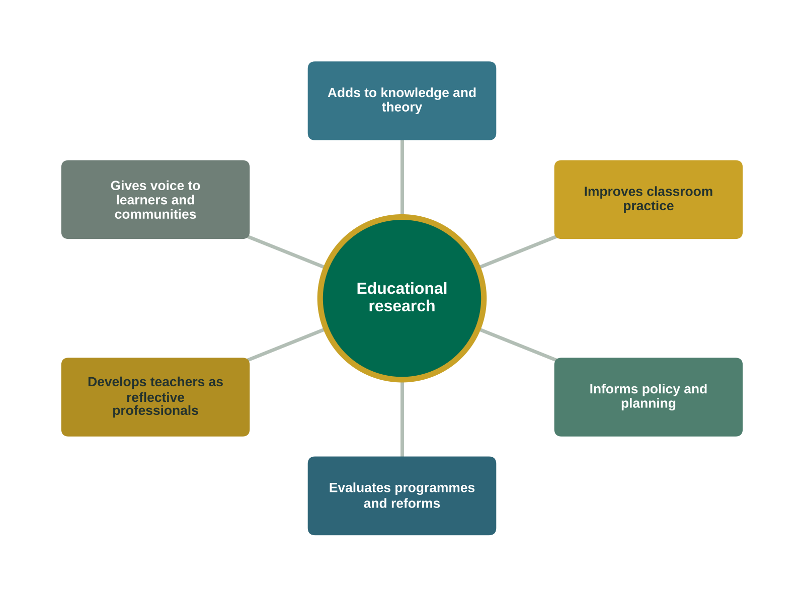
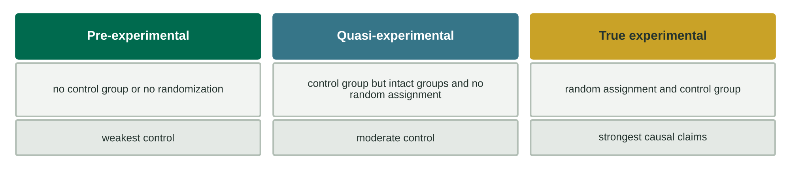
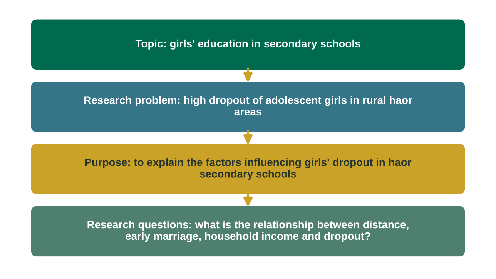
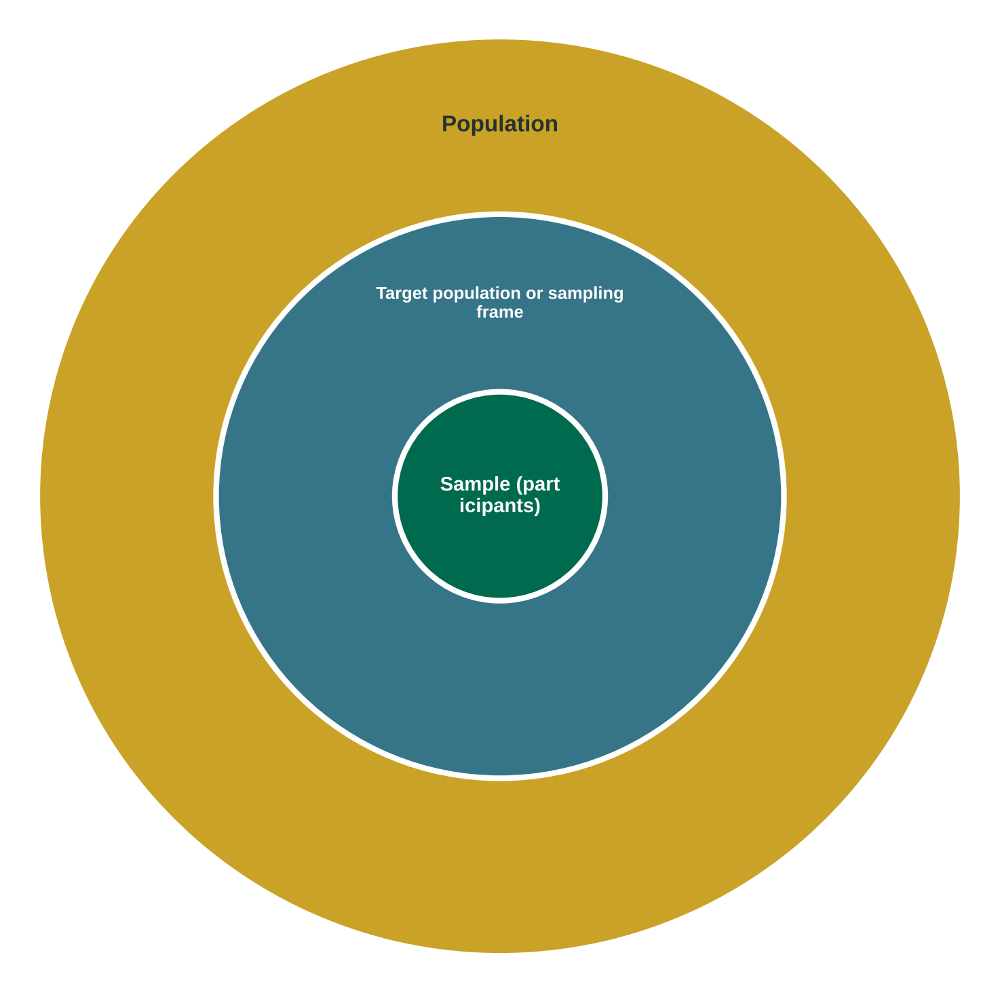
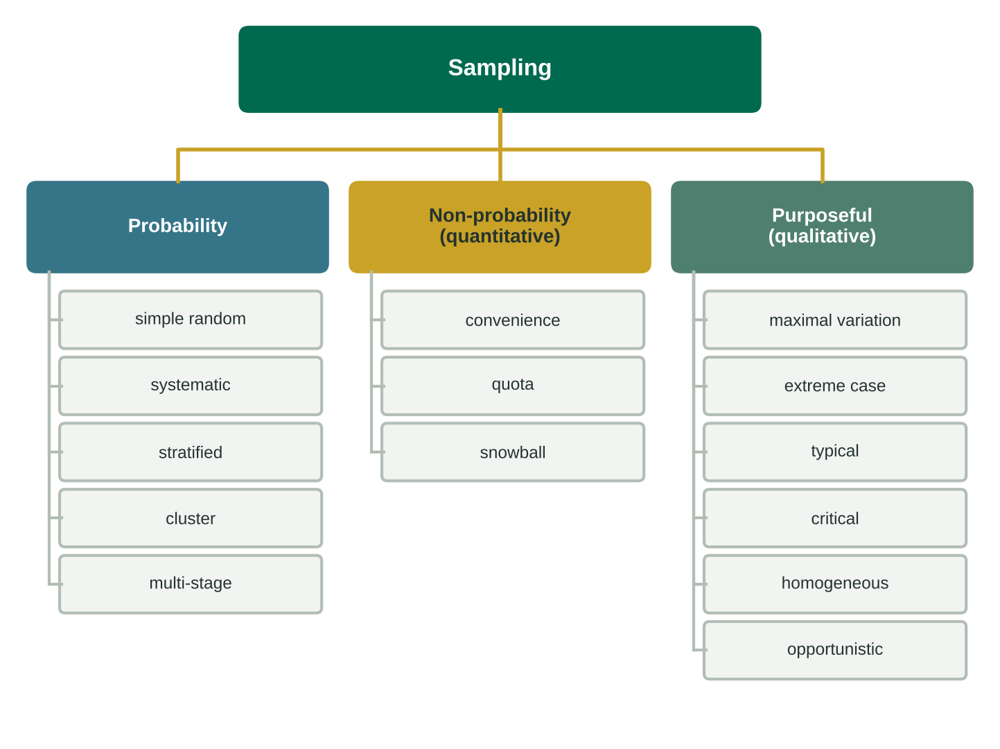
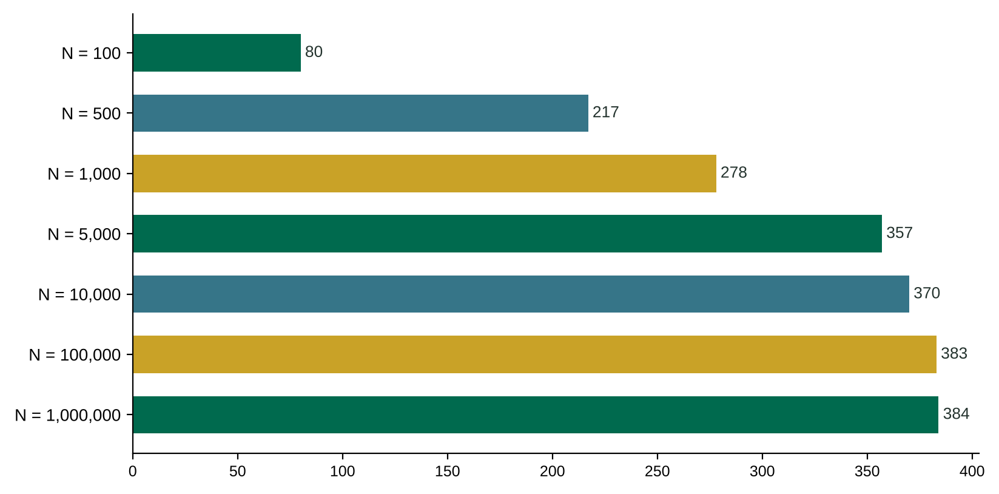
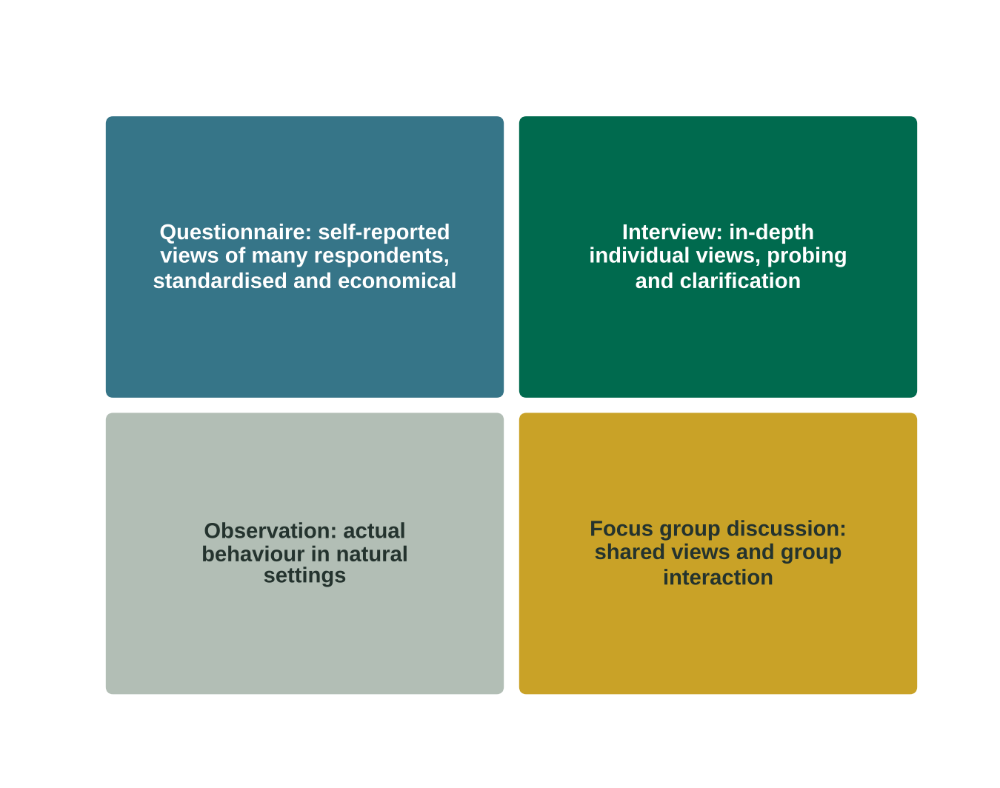

PC 125 শিক্ষা গবেষণার পরিচিতি
সুশৃঙ্খল অনুসন্ধান হিসেবে গবেষণা: নকশা, সমস্যা, প্রশ্ন, নমুনায়ন, উপকরণ, বিশ্লেষণ, তথ্যসূত্র লিখন ও প্রস্তাবনা রচনা
এটি ইংরেজি পাঠ নোটের বাংলা সংস্করণ। পাঠতালিকা ও তথ্যসূত্রের বইয়ের নাম মূল ভাষায় রাখা হয়েছে, যাতে লাইব্রেরিতে সহজে খুঁজে পান।
সূচিপত্র
- ইউনিট ১: গবেষণার অর্থ, গুরুত্ব ও বৈশিষ্ট্য
- ইউনিট ২: শিক্ষা গবেষণা নকশা
- ইউনিট ৩: গবেষণা সমস্যা চিহ্নিতকরণ
- ইউনিট ৪: গবেষণার উদ্দেশ্য, গবেষণা প্রশ্ন ও অনুকল্প
- ইউনিট ৫: নমুনা ও নমুনায়ন
- ইউনিট ৬: উপাত্ত সংগ্রহের উপকরণ
- ইউনিট ৭: উপাত্ত বিশ্লেষণের মৌলিক বিষয়
- ইউনিট ৮: তথ্যসূত্র উল্লেখ ও গ্রন্থপঞ্জি
- ইউনিট ৯: গবেষণা প্রস্তাব লিখন
- পাঠতালিকা
- পরীক্ষা প্রস্তুতি প্রশ্নব্যাংক
- তথ্যসূত্র
এই কোর্স সম্পর্কে
শিক্ষা গবেষণা (educational research) হলো একটি নিয়মতান্ত্রিক ও শৃঙ্খলাবদ্ধ অনুসন্ধান, যা শিক্ষাদান, শিখন ও শিক্ষানীতির উন্নয়নের জন্য বিশ্বাসযোগ্য জ্ঞান সৃষ্টি করে। এই কোর্সে গবেষণার অর্থ ও প্রক্রিয়া; প্রধান পরিমাণগত, গুণগত ও সমন্বিত (কার্যোপযোগী ও মিশ্র পদ্ধতি) নকশা; গবেষণা সমস্যা চিহ্নিতকরণ ও বিবৃতকরণ; উদ্দেশ্য বিবৃতি, গবেষণা প্রশ্ন ও অনুকল্প লিখন; নমুনায়ন; উপাত্ত সংগ্রহের উপকরণ ও নৈতিকতা; পরিমাণগত ও গুণগত বিশ্লেষণের মৌলিক বিষয়; একাডেমিক তথ্যসূত্র উল্লেখ ও কুম্ভীলকবৃত্তি পরিহার; এবং একটি পূর্ণাঙ্গ গবেষণা প্রস্তাব লিখনের সঙ্গে পরিচয় করানো হয়েছে। এই নোটসমূহ প্রধানত Creswell, Gay, Mills ও Airasian, Fraenkel ও Wallen, Best ও Kahn, Johnson ও Christensen, Cohen, Manion ও Morrison এবং APA Publication Manual (7th ed.)-এর ওপর ভিত্তি করে প্রস্তুত করা হয়েছে।
কোর্সের উদ্দেশ্য
শিক্ষা গবেষণার ধারণা, বৈশিষ্ট্য, উদ্দেশ্য ও প্রক্রিয়া ব্যাখ্যা করতে পারবেন।
পরিমাণগত, গুণগত, কার্যোপযোগী ও মিশ্র পদ্ধতির নকশার মধ্যে পার্থক্য করতে এবং যথাযথ নকশা নির্বাচন করতে পারবেন।
একটি গবেষণা সমস্যা চিহ্নিত ও যৌক্তিকভাবে প্রতিষ্ঠা করতে এবং উদ্দেশ্য বিবৃতি, গবেষণা প্রশ্ন ও অনুকল্প লিখতে পারবেন।
যথাযথ ও নৈতিকভাবে নমুনা এবং উপাত্ত সংগ্রহের উপকরণ নির্বাচন করতে পারবেন।
পরিমাণগত ও গুণগত উপাত্ত বিশ্লেষণ ও ব্যাখ্যার মৌলিক বিষয়গুলো বর্ণনা করতে পারবেন।
APA পদ্ধতিতে তথ্যসূত্র উল্লেখ করতে, কুম্ভীলকবৃত্তি পরিহার করতে এবং একটি পূর্ণাঙ্গ গবেষণা প্রস্তাব লিখতে পারবেন।
প্রতিটি ইউনিট অফিশিয়াল পাঠ্যসূচির ক্রম অনুসরণ করে। প্রথমে মূল আলোচনা পড়ুন, তারপর মূল কথা বক্সগুলো, এরপর পরীক্ষার প্রস্তুতি প্রশ্ন দিয়ে নিজেকে যাচাই করুন।
সোনালি বক্স = অবশ্যই মনে রাখার বিষয়। সবুজাভ নীল বক্স = সংজ্ঞা ও পড়ার কৌশল। সবুজ বক্স = বাংলাদেশ প্রেক্ষাপট।
শেষ অধ্যায়টি বিশ্ববিদ্যালয় পরীক্ষার ধরনে একটি প্রশ্নব্যাংক (উত্তরসহ MCQ, সংক্ষিপ্ত ও রচনামূলক প্রশ্ন), এরপর APA 7th রীতিতে পূর্ণ তথ্যসূত্র।
ভর্তি, বাজেট ও নীতি সংক্রান্ত পরিসংখ্যান প্রতি বছর বদলায়। পরীক্ষার আগে BANBEIS, DPE, UGC ও UNESCO-এর সর্বশেষ তথ্য দেখে নিন।
ইউনিট ১: গবেষণার অর্থ, গুরুত্ব ও বৈশিষ্ট্য
অধ্যায়ের সারসংক্ষেপ
গবেষণা (research) শব্দটি ফরাসি শব্দ recherche থেকে এসেছে, যার অর্থ "পুনরায় অনুসন্ধান করা"। একাডেমিক ব্যবহারে গবেষণা হলো বিভিন্ন প্রস্তাবনা বা প্রশ্নের একটি নিয়মতান্ত্রিক, নিয়ন্ত্রিত, অভিজ্ঞতাভিত্তিক ও বিচারমূলক অনুসন্ধান, যা নতুন জ্ঞান আবিষ্কার বা বিদ্যমান জ্ঞান যাচাইয়ের উদ্দেশ্যে পরিচালিত হয়।
এই অধ্যায়ে যা আছে: গবেষণা ও শিক্ষা গবেষণার অর্থ; শিক্ষা গবেষণার বৈশিষ্ট্য; শিক্ষা গবেষণার উদ্দেশ্য ও গুরুত্ব; জ্ঞানের অনুসন্ধান: জানার উৎসসমূহ; গবেষণা প্রক্রিয়ার ধাপসমূহ; প্রতিটি ধাপে সাহিত্য পর্যালোচনার ভূমিকা।
মূল পরিভাষা:
- গবেষণা (Creswell, 2012) : "গবেষণা হলো কোনো বিষয় বা সমস্যা সম্পর্কে আমাদের বোধগম্যতা বৃদ্ধির জন্য তথ্য সংগ্রহ ও বিশ্লেষণে ব্যবহৃত কতগুলো ধাপের একটি প্রক্রিয়া।" এটি তিনটি ধাপ নিয়ে গঠিত: একটি প্রশ্ন উত্থাপন, প্রশ্নের উত্তর দিতে উপাত্ত সংগ্রহ, এবং…
- গবেষণা (Kerlinger, 1986) : "বৈজ্ঞানিক গবেষণা হলো প্রাকৃতিক ঘটনাবলির একটি নিয়মতান্ত্রিক, নিয়ন্ত্রিত, অভিজ্ঞতাভিত্তিক, নৈতিকতা-নিরপেক্ষ, প্রকাশ্য ও বিচারমূলক অনুসন্ধান।
- শিক্ষা গবেষণা (Best & Kahn, 2006) : শিক্ষা গবেষণা হলো "নিয়ন্ত্রিত পর্যবেক্ষণসমূহের নিয়মতান্ত্রিক ও বস্তুনিষ্ঠ বিশ্লেষণ ও লিপিবদ্ধকরণ, যা সাধারণীকরণ, নীতি বা তত্ত্ব গঠনের দিকে নিয়ে যেতে পারে এবং যার ফলে ঘটনাবলির পূর্বাভাস ও সম্ভবত চূড়ান্ত নিয়ন্ত্রণ সম্ভব হয়"…
মনে রাখার মূল বিষয়:
- গবেষণা আরোহ পদ্ধতির "কী" (পর্যবেক্ষণ)-কে অবরোহ পদ্ধতির "কেন" (তত্ত্ব)-এর সঙ্গে যুক্ত করে।
শিক্ষাক্রমে যা বলা হয়েছেইউনিট ১: গবেষণার অর্থ, গুরুত্ব ও বৈশিষ্ট্য · ৪ সংযোগ ঘণ্টা
এই ইউনিট শেষে শিক্ষার্থীরা যা পারবে
- শিক্ষা গবেষণার ধারণা অনুধাবন করা
- অনুসন্ধানের একটি প্রক্রিয়া হিসেবে গবেষণার বিকাশ প্রক্রিয়া বর্ণনা করা
- গবেষণা ও শিক্ষা গবেষণার অর্থ ও ধারণা
- শিক্ষা গবেষণার বৈশিষ্ট্য
- শিক্ষাক্ষেত্রে গবেষণা পরিচালনার উদ্দেশ্য ও গুরুত্ব
- জ্ঞানের অনুসন্ধান: অভিজ্ঞতা, আরোহী বনাম অবরোহী যুক্তি, বৈজ্ঞানিক পদ্ধতি
- গবেষণা প্রক্রিয়ার ধাপসমূহ
- গবেষণার বিভিন্ন ধাপে সাহিত্য পর্যালোচনার ভূমিকা
১.১ গবেষণা ও শিক্ষা গবেষণার অর্থ
গবেষণা শব্দটি ফরাসি শব্দ recherche থেকে এসেছে, যার অর্থ "পুনরায় অনুসন্ধান করা"। একাডেমিক ব্যবহারে গবেষণা হলো বিভিন্ন প্রস্তাবনা বা প্রশ্নের একটি নিয়মতান্ত্রিক, নিয়ন্ত্রিত, অভিজ্ঞতাভিত্তিক ও বিচারমূলক অনুসন্ধান, যা নতুন জ্ঞান আবিষ্কার বা বিদ্যমান জ্ঞান যাচাইয়ের উদ্দেশ্যে পরিচালিত হয়।
গবেষণা (Creswell, 2012): "গবেষণা হলো কোনো বিষয় বা সমস্যা সম্পর্কে আমাদের বোধগম্যতা বৃদ্ধির জন্য তথ্য সংগ্রহ ও বিশ্লেষণে ব্যবহৃত কতগুলো ধাপের একটি প্রক্রিয়া।" এটি তিনটি ধাপ নিয়ে গঠিত: একটি প্রশ্ন উত্থাপন, প্রশ্নের উত্তর দিতে উপাত্ত সংগ্রহ এবং প্রশ্নের একটি উত্তর উপস্থাপন।
গবেষণা (Kerlinger, 1986): "বৈজ্ঞানিক গবেষণা হলো প্রাকৃতিক ঘটনাবলির একটি নিয়মতান্ত্রিক, নিয়ন্ত্রিত, অভিজ্ঞতাভিত্তিক, নৈতিকতা-নিরপেক্ষ, প্রকাশ্য ও বিচারমূলক অনুসন্ধান। এটি তত্ত্ব এবং এসব ঘটনার মধ্যকার অনুমিত সম্পর্ক বিষয়ক অনুকল্প দ্বারা পরিচালিত হয়।"
শিক্ষা গবেষণা (Best & Kahn, 2006): শিক্ষা গবেষণা হলো শিক্ষাক্ষেত্রে "নিয়ন্ত্রিত পর্যবেক্ষণসমূহের নিয়মতান্ত্রিক ও বস্তুনিষ্ঠ বিশ্লেষণ ও লিপিবদ্ধকরণ, যা সাধারণীকরণ, নীতি বা তত্ত্ব গঠনের দিকে নিয়ে যেতে পারে এবং যার ফলে ঘটনাবলির পূর্বাভাস ও সম্ভবত চূড়ান্ত নিয়ন্ত্রণ সম্ভব হয়"। এর লক্ষ্য শিক্ষাদান, শিখন, বিদ্যালয় ব্যবস্থা ও নীতির উন্নয়ন।
সুতরাং শিক্ষা গবেষণা শিক্ষাবিষয়ক প্রশ্নের ক্ষেত্রে শৃঙ্খলাবদ্ধ অনুসন্ধানের পদ্ধতি প্রয়োগ করে: শিশুরা কীভাবে পড়তে শেখে? একটি নতুন শিক্ষক-প্রশিক্ষণ কার্যক্রম কি শ্রেণিকক্ষের অনুশীলনের উন্নতি ঘটায়? একটি নির্দিষ্ট উপজেলায় মেয়েরা কেন মাধ্যমিক বিদ্যালয় থেকে ঝরে পড়ে? একীভূত শিক্ষা সম্পর্কে শিক্ষকেরা কী বিশ্বাস করেন?
১.২ শিক্ষা গবেষণার বৈশিষ্ট্য
| বৈশিষ্ট্য | ব্যাখ্যা |
|---|---|
| নিয়মতান্ত্রিক (Systematic) | সমস্যা থেকে সিদ্ধান্ত পর্যন্ত পরিকল্পিত ও সুশৃঙ্খল ধাপক্রম অনুসরণ করে |
| অভিজ্ঞতাভিত্তিক (Empirical) | মতামত বা কর্তৃপক্ষের পরিবর্তে পর্যবেক্ষণযোগ্য প্রমাণের (উপাত্ত) ওপর ভিত্তি করে |
| যৌক্তিক (Logical) | আরোহী ও অবরোহী যুক্তি ব্যবহার করে; সিদ্ধান্তসমূহ প্রমাণ থেকে উদ্ভূত হয় |
| পুনরাবৃত্তিযোগ্য / স্বচ্ছ (Replicable / transparent) | কার্যপ্রণালী এমনভাবে বর্ণনা করা হয় যাতে অন্যরা গবেষণাটি পুনরাবৃত্তি বা নিরীক্ষা করতে পারেন |
| বস্তুনিষ্ঠ / নিরপেক্ষ (Objective / impartial) | ব্যক্তিগত পক্ষপাত হ্রাস করে; গুণগত গবেষণায় আত্মপ্রতিফলনের (reflexivity) মাধ্যমে পক্ষপাত স্বীকার করা হয় |
| উদ্দেশ্যমূলক (Purposive) | একটি সমস্যা সমাধান বা সুস্পষ্টভাবে বিবৃত একটি প্রশ্নের উত্তর অনুসন্ধানের দিকে পরিচালিত |
| বিচারমূলক ও স্ব-সংশোধনমূলক (Critical and self-correcting) | ফলাফলসমূহ প্রকাশ্য যাচাই, সহকর্মী পর্যালোচনা (peer review) ও সংশোধনের জন্য উন্মুক্ত থাকে |
| ক্রমপুঞ্জিত (Cumulative) | সাহিত্য পর্যালোচনার মাধ্যমে পূর্ববর্তী জ্ঞানের ওপর ভিত্তি করে গড়ে ওঠে এবং তাতে নতুন জ্ঞান যুক্ত করে |
| নৈতিক (Ethical) | অংশগ্রহণকারীদের অধিকার, সম্মতি, গোপনীয়তা ও কল্যাণ সুরক্ষা করে |
| আন্তঃবিষয়ক (Interdisciplinary) | মনোবিজ্ঞান, সমাজবিজ্ঞান, দর্শন, অর্থনীতি, পরিসংখ্যান ও অন্যান্য শাস্ত্রের সহায়তা গ্রহণ করে |
১.৩ শিক্ষা গবেষণার উদ্দেশ্য ও গুরুত্ব
গবেষণা তিনটি বৃহৎ উদ্দেশ্য সাধন করে (Creswell, 2012): এটি জ্ঞানের ভান্ডারে সংযোজন করে, অনুশীলনের উন্নয়ন ঘটায় এবং নীতিবিষয়ক বিতর্কে তথ্য জোগায়।

চিত্র ১। শিক্ষা গবেষণা কেন গুরুত্বপূর্ণ
উদ্দেশ্যের ভিত্তিতে প্রায়ই মৌলিক, প্রায়োগিক, মূল্যায়নমূলক ও কার্যোপযোগী গবেষণার মধ্যে পার্থক্য করা হয়:
| উদ্দেশ্য অনুযায়ী প্রকার | লক্ষ্য | উদাহরণ |
|---|---|---|
| মৌলিক গবেষণা (Basic / fundamental research) | তত্ত্ব গঠন বা যাচাই করা; জ্ঞানের জন্যই জ্ঞান | শিখনে কার্যকরী স্মৃতি (working memory) সংক্রান্ত একটি তত্ত্ব যাচাই |
| প্রায়োগিক গবেষণা (Applied research) | তত্ত্ব ব্যবহার করে একটি ব্যবহারিক সমস্যার সমাধান | সপ্তম শ্রেণির গণিত অর্জনের ওপর সহযোগিতামূলক শিখনের প্রভাব |
| মূল্যায়নমূলক গবেষণা (Evaluation research) | একটি কার্যক্রমের গুণাগুণ বা উপযোগিতা নিরূপণ | মাধ্যমিক স্তরের মেয়েদের জন্য একটি উপবৃত্তি (stipend) কার্যক্রমের মূল্যায়ন |
| কার্যোপযোগী গবেষণা | অনুশীলনকারীরা নিজ কর্মক্ষেত্রে নিজেদের অনুশীলনের উন্নয়ন ঘটান | একজন শিক্ষক কর্তৃক শিক্ষার্থীদের শ্রেণি-অংশগ্রহণের উন্নয়ন |
| গবেষণা ও উন্নয়ন (R&D) | শিক্ষাবিষয়ক উপকরণ প্রস্তুত ও মাঠপর্যায়ে পরীক্ষণ | একটি ডিজিটাল বিজ্ঞান মডিউল প্রস্তুত ও এর যথার্থতা প্রতিপাদন |
বাংলাদেশে NAEM, জাতীয় শিক্ষাক্রম ও পাঠ্যপুস্তক বোর্ড (NCTB), BANBEIS, শিক্ষা ও গবেষণা ইনস্টিটিউট (IER, ঢাকা বিশ্ববিদ্যালয়) ও অন্যান্য বিশ্ববিদ্যালয়ের বিভাগ, BRAC এবং CAMPE (Education Watch প্রতিবেদন) পরিচালিত গবেষণা জাতীয় শিক্ষানীতি ২০১০, যোগ্যতাভিত্তিক শিক্ষাক্রম, উপবৃত্তি কার্যক্রম এবং শিক্ষকদের পেশাগত উন্নয়নের মতো নীতি প্রণয়নে ভূমিকা রেখেছে।
১.৪ জ্ঞানের অনুসন্ধান: জানার উৎসসমূহ
মানুষ বিভিন্ন উপায়ে জ্ঞান অর্জন করে। এদের মধ্যে গবেষণা সবচেয়ে নির্ভরযোগ্য, কারণ এটি অভিজ্ঞতা ও যুক্তিকে নিয়মতান্ত্রিক ও স্ব-সংশোধনমূলক উপায়ে সমন্বিত করে।

চিত্র ২। সবচেয়ে কম থেকে সবচেয়ে বেশি নিয়মতান্ত্রিক জ্ঞানের উৎসসমূহ
| পদ্ধতি | প্রক্রিয়া | শক্তিশালী দিক | সীমাবদ্ধতা |
|---|---|---|---|
| অভিজ্ঞতা | ব্যক্তিগত বা পারস্পরিক অভিজ্ঞতা থেকে শেখা | ব্যবহারিক, তাৎক্ষণিক | সীমিত, পক্ষপাতদুষ্ট, অনিয়মতান্ত্রিক |
| কর্তৃপক্ষ (Authority) | বিশেষজ্ঞ বা গ্রন্থ থেকে জ্ঞান গ্রহণ | দক্ষ ও সময়সাশ্রয়ী | কর্তৃপক্ষও ভুল হতে পারে |
| অবরোহী যুক্তি (Deductive reasoning) | সাধারণ আশ্রয়বাক্য থেকে নির্দিষ্ট সিদ্ধান্তে উপনীত হওয়া (ন্যায়বাক্য বা syllogism): সকল শিক্ষকের প্রশিক্ষণ প্রয়োজন; রিনা একজন শিক্ষক; সুতরাং রিনার প্রশিক্ষণ প্রয়োজন | আশ্রয়বাক্য সত্য হলে সিদ্ধান্ত নিশ্চিত | আশ্রয়বাক্য মিথ্যা হতে পারে; নতুন কোনো জ্ঞান যোগ করে না |
| আরোহী যুক্তি (Inductive reasoning) | নির্দিষ্ট পর্যবেক্ষণ থেকে সাধারণ সিদ্ধান্তে উপনীত হওয়া (ফ্রান্সিস বেকন, Francis Bacon) | নতুন সাধারণীকরণ সৃষ্টি করে | পর্যবেক্ষণ অসম্পূর্ণ থাকে; সিদ্ধান্ত সম্ভাব্য মাত্র |
| বৈজ্ঞানিক পদ্ধতি (Scientific method) | আরোহ ও অবরোহকে সমন্বিত করে: পর্যবেক্ষণ, অনুকল্প গঠন, পরিণতি নির্ণয়, যাচাই, সিদ্ধান্ত গ্রহণ | নিয়মতান্ত্রিক, স্ব-সংশোধনমূলক | শিক্ষাবিষয়ক সব প্রশ্ন সহজে যাচাইযোগ্য নয় |
ডিউইর প্রতিফলনমূলক চিন্তনের ধাপসমূহ (বৈজ্ঞানিক পদ্ধতি)
জন ডিউই (John Dewey) (1910, How We Think) বৈজ্ঞানিক পদ্ধতির ভিত্তি হিসেবে পাঁচটি ধাপ বর্ণনা করেছেন: (১) একটি অনুভূত সমস্যা, (২) সমস্যার অবস্থান নির্ণয় ও সংজ্ঞায়ন, (৩) সম্ভাব্য সমাধানের প্রস্তাব (অনুকল্প), (৪) প্রস্তাবসমূহের তাৎপর্য যুক্তির মাধ্যমে বিশ্লেষণ, এবং (৫) পর্যবেক্ষণ বা পরীক্ষণের মাধ্যমে অনুকল্প যাচাই।
গবেষণা আরোহ পদ্ধতির কী (পর্যবেক্ষণ)-কে অবরোহ পদ্ধতির কেন (তত্ত্ব)-এর সঙ্গে যুক্ত করে। পরিমাণগত গবেষণাকে প্রায়ই অবরোহী (তত্ত্ব → অনুকল্প → উপাত্ত → সমর্থন) হিসেবে বর্ণনা করা হয়, অন্যদিকে গুণগত গবেষণা মূলত আরোহী (উপাত্ত → কোড → থিম → তত্ত্ব)।
১.৫ গবেষণা প্রক্রিয়ার ধাপসমূহ
Creswell (2012) পরিমাণগত ও গুণগত উভয় গবেষণার ক্ষেত্রে প্রযোজ্য ছয়টি সাধারণ ধাপ বর্ণনা করেছেন:
")
চিত্র ৩। গবেষণা প্রক্রিয়া (Creswell, 2012)
| ধাপ | পরিমাণগত গবেষণায় গুরুত্ব | গুণগত গবেষণায় গুরুত্ব |
|---|---|---|
| ১. সমস্যা চিহ্নিতকরণ | প্রবণতার বর্ণনা বা চলকসমূহের মধ্যকার সম্পর্কের ব্যাখ্যা | একটি কেন্দ্রীয় ঘটনার (central phenomenon) গভীর অনুসন্ধান |
| ২. সাহিত্য পর্যালোচনা | প্রধান ভূমিকা: সমস্যার যৌক্তিকতা প্রতিষ্ঠা করে এবং প্রশ্ন ও অনুকল্পের ইঙ্গিত দেয় | শুরুতে গৌণ ভূমিকা: সমস্যার যৌক্তিকতা প্রতিষ্ঠা করে; শেষে বেশি ব্যবহৃত হয় |
| ৩. উদ্দেশ্য, প্রশ্ন, অনুকল্প | নির্দিষ্ট, সংকীর্ণ, পরিমাপযোগ্য, পর্যবেক্ষণযোগ্য | সাধারণ, বিস্তৃত, অংশগ্রহণকারীদের অভিজ্ঞতা অনুসন্ধানমূলক |
| ৪. উপাত্ত সংগ্রহ | পূর্বনির্ধারিত প্রশ্নযুক্ত উপকরণ; বৃহৎ সংখ্যক অংশগ্রহণকারী; দৈব নমুনায়ন | ক্রমবিকাশমান প্রোটোকল; স্বল্প সংখ্যক অংশগ্রহণকারী; উদ্দেশ্যমূলক নমুনায়ন |
| ৫. বিশ্লেষণ ও ব্যাখ্যা | পরিসংখ্যানিক বিশ্লেষণ; পূর্বাভাস ও পূর্ববর্তী গবেষণার সঙ্গে তুলনা | লিখিত পাঠ ও চিত্র বিশ্লেষণ; থিম; বৃহত্তর অর্থ |
| ৬. প্রতিবেদন ও মূল্যায়ন | আদর্শ ও নির্দিষ্ট কাঠামো; বস্তুনিষ্ঠ ও পক্ষপাতহীন | নমনীয় ও ক্রমবিকাশমান কাঠামো; আত্মপ্রতিফলনমূলক ও গবেষকের দৃষ্টিভঙ্গি-প্রভাবিত |
১.৬ প্রতিটি ধাপে সাহিত্য পর্যালোচনার ভূমিকা
সাহিত্য পর্যালোচনা (literature review) হলো জার্নাল প্রবন্ধ, গ্রন্থ ও অন্যান্য দলিলের একটি লিখিত সারসংক্ষেপ, যা কোনো বিষয়ে অতীত ও বর্তমান তথ্যের অবস্থা বর্ণনা করে, সেগুলোকে বিন্যস্ত করে এবং প্রস্তাবিত গবেষণার প্রয়োজনীয়তা প্রমাণসহ উপস্থাপন করে (Creswell, 2012)।
সমস্যা চিহ্নিতকরণ: কী জানা আছে তা দেখায়, জ্ঞানের ঘাটতি উন্মোচন করে এবং একটি বিস্তৃত বিষয়কে সংকীর্ণ করতে সহায়তা করে।
সমস্যার যৌক্তিকতা প্রতিষ্ঠা: সমস্যাটি যে গুরুত্বপূর্ণ তার প্রমাণ সরবরাহ করে।
উদ্দেশ্য ও প্রশ্ন: চলক, তত্ত্ব ও অনুকল্পের ইঙ্গিত দেয়; পরিমাণগত গবেষণায় তত্ত্ব প্রশ্নসমূহকে নির্দেশনা দেয়।
গবেষণা পদ্ধতি: অন্যদের ব্যবহৃত নকশা, উপকরণ ও নমুনা দেখায়; পরিচিত ভুলত্রুটি এড়াতে সহায়তা করে; যথার্থতা-প্রতিপাদিত উপকরণ সরবরাহ করতে পারে।
বিশ্লেষণ ও ব্যাখ্যা: ফলাফলসমূহকে পূর্ববর্তী গবেষণার সঙ্গে তুলনা করে সেগুলোকে সমর্থন, সম্প্রসারণ বা চ্যালেঞ্জ করা হয়।
প্রতিবেদন প্রণয়ন: সংশ্লিষ্ট ক্ষেত্রে গবেষণাটির অবদানকে যথাস্থানে প্রতিষ্ঠিত করে।
সাহিত্য পর্যালোচনা পরিচালনার ধাপসমূহ
মূল পরিভাষা চিহ্নিত করুন (মূলশব্দ, বর্ণনাসূচক শব্দ)।
সাহিত্য খুঁজে বের করুন (ERIC, Google Scholar, Scopus, JSTOR, বিশ্ববিদ্যালয়ের গ্রন্থাগার, BANBEIS প্রতিবেদন)।
বিচারমূলকভাবে মূল্যায়ন ও নির্বাচন করুন (প্রাসঙ্গিকতা, মান, সাম্প্রতিকতা; প্রাথমিক বনাম মাধ্যমিক উৎস)।
সাহিত্য বিন্যস্ত করুন (সাহিত্য মানচিত্র, নোট, রেফারেন্স ম্যানেজার)।
পর্যালোচনাটি সারসংক্ষেপের তালিকা হিসেবে নয়, বরং থিমভিত্তিকভাবে লিখুন এবং আপনার গবেষণা যে ঘাটতি পূরণ করবে তা দিয়ে শেষ করুন।
মাধ্যমিক উৎসের (অন্যদের প্রণীত সারসংক্ষেপ) তুলনায় প্রাথমিক উৎসকে (গবেষক কর্তৃক প্রতিবেদিত মৌলিক গবেষণা) অগ্রাধিকার দিন। সংবাদপত্র বা পর্যালোচনাহীন ওয়েবসাইটের তুলনায় সহকর্মী-পর্যালোচিত জার্নাল প্রবন্ধ অধিক গুরুত্ব বহন করে।
সম্ভাব্য প্রশ্ন: "শিক্ষা গবেষণার সংজ্ঞা দিন এবং এর বৈশিষ্ট্যসমূহ আলোচনা করুন।" "উদাহরণসহ আরোহী ও অবরোহী যুক্তির মধ্যে পার্থক্য করুন।" "গবেষণা প্রক্রিয়ার ধাপসমূহ এবং প্রতিটি ধাপে সাহিত্য পর্যালোচনার ভূমিকা বর্ণনা করুন।"
ইউনিট ২: শিক্ষা গবেষণা নকশা
অধ্যায়ের সারসংক্ষেপ
গবেষণা নকশা (research design) হলো গবেষণা প্রশ্নের উত্তর দেওয়ার সামগ্রিক পরিকল্পনা বা কৌশল: এতে নির্দিষ্ট করা হয় কী উপাত্ত সংগ্রহ করা হবে, কাদের কাছ থেকে, কীভাবে, কখন এবং কীভাবে সেগুলো বিশ্লেষণ করা হবে। Creswell (2012) নকশাকে বলেছেন "গবেষণা প্রক্রিয়ায় জড়িত নির্দিষ্ট কার্যপ্রণালী: উপাত্ত সংগ্রহ, উপাত্ত বিশ্লেষণ এবং প্রতিবেদন লিখন"।
এই অধ্যায়ে যা আছে: গবেষণা নকশার ধারণা ও শ্রেণিবিভাগ; পরিমাণগত গবেষণা নকশা; গুণগত গবেষণা নকশা; সমন্বিত নকশা।
মনে রাখার মূল বিষয়:
- পরিমাণগত গবেষণা প্রশ্ন করে: কতজন, কী পরিমাণ, সম্পর্ক কী, X কি Y-এর কারণ?
শিক্ষাক্রমে যা বলা হয়েছেইউনিট ২: শিক্ষা গবেষণা নকশা · ১০ সংযোগ ঘণ্টা
এই ইউনিট শেষে শিক্ষার্থীরা যা পারবে
- গবেষণা নকশার ধারণা ব্যাখ্যা করা
- বিভিন্ন শিক্ষাবিষয়ক সমস্যা/পরিস্থিতির জন্য বিভিন্ন গবেষণা নকশা চিহ্নিত করা
- গবেষণা নকশার ধারণা ও শ্রেণিবিভাগ (আলোচনা, মূল বৈশিষ্ট্য, প্রকারভেদ, নকশার সঙ্গে সংগতিপূর্ণ সমস্যা/পরিস্থিতি, নিম্নলিখিত প্রতিটি নকশা পরিচালনার
২.১ গবেষণা নকশার ধারণা ও শ্রেণিবিভাগ
গবেষণা নকশা (research design) হলো গবেষণা প্রশ্নের উত্তর দেওয়ার সামগ্রিক পরিকল্পনা বা কৌশল: এতে নির্দিষ্ট করা হয় কী উপাত্ত সংগ্রহ করা হবে, কাদের কাছ থেকে, কীভাবে, কখন এবং কীভাবে সেগুলো বিশ্লেষণ করা হবে। Creswell (2012) নকশাকে বলেছেন "গবেষণা প্রক্রিয়ায় জড়িত নির্দিষ্ট কার্যপ্রণালী: উপাত্ত সংগ্রহ, উপাত্ত বিশ্লেষণ এবং প্রতিবেদন লিখন"। Kerlinger (1986) নকশাকে বর্ণনা করেছেন "অনুসন্ধানের এমন পরিকল্পনা ও কাঠামো, যা গবেষণা প্রশ্নের উত্তর লাভ এবং ভেদাঙ্ক নিয়ন্ত্রণের উদ্দেশ্যে পরিকল্পিত"।
")
চিত্র ৪। শিক্ষা গবেষণা নকশার শ্রেণিবিভাগ (Creswell, 2012 অবলম্বনে)
নকশাসমূহের পেছনের দৃষ্টান্ত (paradigm)
| বৈশিষ্ট্য | প্রত্যক্ষবাদী / উত্তর-প্রত্যক্ষবাদী (পরিমাণগত) | ব্যাখ্যাবাদী / গঠনবাদী (গুণগত) | প্রয়োগবাদী (মিশ্র) |
|---|---|---|---|
| সত্তাতত্ত্ব (Ontology): বাস্তবতার প্রকৃতি | একক, বস্তুনিষ্ঠ বাস্তবতা | একাধিক, সামাজিকভাবে নির্মিত বাস্তবতা | বাস্তবে যা কার্যকর তা-ই বাস্তবতা |
| জ্ঞানতত্ত্ব (Epistemology): জ্ঞান | গবেষক স্বাধীন ও বস্তুনিষ্ঠ | গবেষক অংশগ্রহণকারীদের সঙ্গে মিথস্ক্রিয়া করেন | বস্তুনিষ্ঠ ও ব্যক্তিনিষ্ঠ উভয়ই |
| যুক্তি | অবরোহী, তত্ত্ব যাচাইমূলক | আরোহী, তত্ত্ব সৃষ্টিমূলক | অপহারী (abductive), উভয়ই |
| উপাত্ত | সংখ্যা | শব্দ, চিত্র, পর্যবেক্ষণ | উভয়ই |
| লক্ষ্য | ব্যাখ্যা, পূর্বাভাস, সাধারণীকরণ | অনুধাবন, অর্থের ব্যাখ্যা | সমস্যার সমাধান |
২.২ পরিমাণগত গবেষণা নকশা
(a) জরিপ নকশা
জরিপ গবেষণা (survey research) একটি নমুনা অধ্যয়নের মাধ্যমে কোনো সমগ্রকের মনোভাব, মতামত, আচরণ বা বৈশিষ্ট্যের প্রবণতা বর্ণনা করে (Creswell, 2012)।
প্রকারভেদ: প্রস্থচ্ছেদ (cross-sectional: একটি নির্দিষ্ট সময়ে উপাত্ত সংগ্রহ) এবং অনুদৈর্ঘ্য (longitudinal: সময়ের পরিক্রমায় প্রবণতা, সমবয়সী দল বা cohort এবং প্যানেল গবেষণা)।
মূল বৈশিষ্ট্য: সমগ্রক থেকে নমুনায়ন, প্রশ্নমালা বা কাঠামোবদ্ধ সাক্ষাৎকার, উচ্চ সাড়ার হার, সাধারণীকরণ।
উপযোগী সমস্যা: "নতুন শিক্ষাক্রম সম্পর্কে মাধ্যমিক স্তরের শিক্ষকদের মনোভাব কী?" "পঞ্চম শ্রেণির শিশুরা প্রাইভেট টিউশনে কত ঘণ্টা ব্যয় করে?"
ধাপসমূহ: জরিপই সর্বোত্তম নকশা কি না তা নির্ধারণ → প্রশ্ন চিহ্নিতকরণ → সমগ্রক, নমুনা কাঠামো ও নমুনা চিহ্নিতকরণ → নকশা ও কার্যপ্রণালী নির্ধারণ → উপকরণ প্রণয়ন বা সংগ্রহ → প্রয়োগ → বিশ্লেষণ → প্রতিবেদন।
সমস্যা: নিম্ন সাড়ার হার, সাড়া প্রদানে পক্ষপাত, সামাজিক কাম্যতা (social desirability), ত্রুটিপূর্ণভাবে লিখিত প্রশ্ন।
(b) পরীক্ষণমূলক নকশা
একটি পরীক্ষণ (experiment) কোনো ধারণা (প্রয়োগ বা treatment) যাচাই করে দেখে যে তা কোনো ফলাফলকে (নির্ভরশীল চলক) প্রভাবিত করে কি না; এতে গবেষক স্বাধীন চলককে নিয়ন্ত্রিতভাবে পরিবর্তন (manipulation) করেন এবং অন্যান্য চলককে নিয়ন্ত্রণ করেন (Gay et al., 2012)। এটিই একমাত্র নকশা যা দৃঢ়ভাবে কার্যকারণ সম্পর্ক প্রতিষ্ঠা করতে পারে।
মূল বৈশিষ্ট্য: দৈব বণ্টন (random assignment), বহিরাগত চলকের ওপর নিয়ন্ত্রণ, প্রয়োগ-শর্তের নিয়ন্ত্রিত পরিবর্তন, ফলাফল পরিমাপ, দলগত তুলনা, যথার্থতার প্রতি হুমকি।
| নকশা | সংকেতলিপি (Campbell & Stanley, 1963) | মন্তব্য |
|---|---|---|
| এক-দফা কেস স্টাডি (প্রাক-পরীক্ষণমূলক) | X O | কোনো তুলনা নেই; সবচেয়ে দুর্বল |
| এক-দল প্রাক-অভীক্ষা–উত্তর-অভীক্ষা (প্রাক-পরীক্ষণমূলক) | O X O | কোনো নিয়ন্ত্রিত দল নেই |
| অসমতুল্য নিয়ন্ত্রিত দল (আধা-পরীক্ষণমূলক) | O X O / O – O | অখণ্ড শ্রেণি; কোনো দৈব বণ্টন নেই |
| প্রাক-অভীক্ষা–উত্তর-অভীক্ষা নিয়ন্ত্রিত দল (প্রকৃত পরীক্ষণ) | R O X O / R O – O | দৈব বণ্টন; শক্তিশালী |
| কেবল উত্তর-অভীক্ষা নিয়ন্ত্রিত দল (প্রকৃত পরীক্ষণ) | R X O / R – O | প্রাক-অভীক্ষাজনিত সংবেদনশীলতা এড়ানো যায় |
| সলোমন চার-দল (প্রকৃত পরীক্ষণ) | উপরের নকশাগুলোর সমন্বয়ে চারটি দল | অভীক্ষাজনিত প্রভাব নিয়ন্ত্রণ করে; অনেক অংশগ্রহণকারী প্রয়োজন |
| একক-বিষয়ী (A-B-A) | ভিত্তিরেখা–প্রয়োগ–ভিত্তিরেখা | বিশেষ শিক্ষায় ব্যবহৃত |
R = দৈব বণ্টন, X = প্রয়োগ (treatment), O = পর্যবেক্ষণ বা পরিমাপ।
অভ্যন্তরীণ যথার্থতার প্রতি হুমকি (Campbell & Stanley, 1963): ইতিহাস, পরিপক্বতা (maturation), অভীক্ষা গ্রহণ, পরিমাপ উপকরণ, পরিসংখ্যানিক প্রত্যাবর্তন (statistical regression), নির্বাচন, অংশগ্রহণকারী হ্রাস (mortality/attrition), নির্বাচন–পরিপক্বতা মিথস্ক্রিয়া, প্রয়োগের বিস্তার, প্রতিপূরক প্রতিদ্বন্দ্বিতা। বাহ্যিক যথার্থতার প্রতি হুমকি: নির্বাচন ও প্রয়োগের মিথস্ক্রিয়া, পরিবেশ ও প্রয়োগের মিথস্ক্রিয়া, ইতিহাস ও প্রয়োগের মিথস্ক্রিয়া এবং হথর্ন প্রভাব (Hawthorne effect)।

চিত্র ৫। প্রাক-পরীক্ষণমূলক, আধা-পরীক্ষণমূলক ও প্রকৃত পরীক্ষণমূলক নকশা
(c) কার্যকারণ-তুলনামূলক (ex post facto) নকশা
এ নকশায় গবেষক দলসমূহের মধ্যে বিদ্যমান পার্থক্যের কারণ নির্ণয়ের চেষ্টা করেন, যেখানে স্বাধীন চলকটি ইতোমধ্যে সংঘটিত হয়েছে এবং তা নিয়ন্ত্রিতভাবে পরিবর্তন করা সম্ভব নয় (যেমন: জেন্ডার, বিদ্যালয়ের ধরন, প্রাক-প্রাথমিক শিক্ষায় অংশগ্রহণ)। উদাহরণ: প্রাক-প্রাথমিক বিদ্যালয়ে অংশ নেওয়া ও না-নেওয়া শিশুদের পঠন অর্জনের তুলনা। সীমাবদ্ধতা: দৈবায়ন ও নিয়ন্ত্রণের অভাব; কার্যকারণ সম্পর্কের দাবি অনুমাননির্ভর।
(d) সহসম্বন্ধমূলক নকশা
সহসম্বন্ধমূলক গবেষণা (correlational research) কোনো নিয়ন্ত্রিত পরিবর্তন ছাড়াই সহসম্বন্ধ পরিসংখ্যান ব্যবহার করে দুই বা ততোধিক চলকের মধ্যে সম্পর্কের মাত্রা পরিমাপ করে (Creswell, 2012)।
ব্যাখ্যামূলক নকশা: দুটি চলক কীভাবে একসঙ্গে পরিবর্তিত হয় তা ব্যাখ্যা করে (যেমন: অধ্যয়নের সময় ও GPA)।
পূর্বাভাসমূলক নকশা: এমন পূর্বাভাসক চলক চিহ্নিত করে যা কোনো মানদণ্ডের পূর্বাভাস দেয় (যেমন: SSC-র নম্বর দিয়ে HSC-র নম্বরের পূর্বাভাস)।
সহসম্বন্ধ সহগের (Pearson r) মান −1 থেকে +1 পর্যন্ত হয়। সহসম্বন্ধ কার্যকারণ নির্দেশ করে না।
স্পষ্টভাবে পার্থক্য করুন: সহসম্বন্ধমূলক গবেষণা একটি দল এবং চলকসমূহের মধ্যকার সম্পর্ক অধ্যয়ন করে; কার্যকারণ-তুলনামূলক গবেষণা একটি নির্ভরশীল চলকের ভিত্তিতে দুই বা ততোধিক দলের তুলনা করে; পরীক্ষণমূলক গবেষণা স্বাধীন চলককে নিয়ন্ত্রিতভাবে পরিবর্তন করে।
২.৩ গুণগত গবেষণা নকশা
গুণগত গবেষণা (qualitative research) স্বাভাবিক পরিবেশে একটি কেন্দ্রীয় ঘটনা অনুসন্ধান করে, গবেষককেই মূল উপকরণ হিসেবে ব্যবহার করে, বহুবিধ ধরনের উপাত্ত সংগ্রহ করে, আরোহীভাবে বিশ্লেষণ করে এবং অংশগ্রহণকারীদের প্রদত্ত অর্থের ওপর গুরুত্ব দেয় (Creswell, 2012; Denzin & Lincoln, 2011)।
| নকশা | মূল লক্ষ্য | সাধারণ উপাত্ত | শিক্ষাবিষয়ক উদাহরণ |
|---|---|---|---|
| কেস স্টাডি (Stake, 1995; Yin, 2018) | একটি সীমাবদ্ধ ব্যবস্থার (একজন ব্যক্তি, শ্রেণি, বিদ্যালয়, কার্যক্রম) গভীর অনুসন্ধান | সাক্ষাৎকার, পর্যবেক্ষণ, দলিল | একটি গ্রামীণ বিদ্যালয় কীভাবে একীভূত শিক্ষা বাস্তবায়ন করেছে |
| ঐতিহাসিক গবেষণা | বর্তমানকে বোঝার জন্য অতীত ঘটনাবলির নিয়মতান্ত্রিক অধ্যয়ন | প্রাথমিক উৎস (নথি, চিঠিপত্র), মাধ্যমিক উৎস | বাংলায় মাদ্রাসা শিক্ষার বিকাশ |
| নৃতাত্ত্বিক গবেষণা বা এথনোগ্রাফি (Wolcott, LeCompte & Schensul) | একটি অভিন্ন সংস্কৃতির অধিকারী দলের আচরণ, বিশ্বাস ও ভাষার অভিন্ন ধরন | দীর্ঘমেয়াদি মাঠকর্ম, অংশগ্রহণমূলক পর্যবেক্ষণ | একটি কোচিং সেন্টারের সংস্কৃতি |
| গ্রাউন্ডেড থিওরি বা ভূমিনির্ভর তত্ত্ব (Glaser & Strauss, 1967; Strauss & Corbin) | উপাত্তের ভিত্তিতে এমন একটি তত্ত্ব গঠন, যা একটি প্রক্রিয়াকে ব্যাখ্যা করে | সাক্ষাৎকার; উন্মুক্ত, অক্ষীয় ও নির্বাচনী কোডিং | প্রথম বর্ষের শিক্ষকেরা কীভাবে বড় শ্রেণি সামলান সে বিষয়ক তত্ত্ব |
| প্রপঞ্চবিজ্ঞান বা ফেনোমেনোলজি (Husserl; van Manen; Moustakas) | একাধিক ব্যক্তির অভিন্ন জীবন্ত অভিজ্ঞতার মর্মবস্তু | গভীর সাক্ষাৎকার; বন্ধনীকরণ (bracketing) | মূলধারার শ্রেণিতে দৃষ্টিপ্রতিবন্ধী শিক্ষার্থীদের জীবন্ত অভিজ্ঞতা |
| আখ্যানমূলক গবেষণা (Clandinin & Connelly, 2000) | ব্যক্তির জীবনের গল্প, যা বর্ণিত হয় এবং কালানুক্রমিকভাবে পুনর্বিন্যস্ত হয় | জীবনকাহিনি, দিনলিপি, সাক্ষাৎকার | প্রধান শিক্ষক হয়ে ওঠা একজন নারীর জীবনকাহিনি |
ঐতিহাসিক গবেষণা: উৎসের সমালোচনা
বাহ্যিক সমালোচনা: প্রামাণিকতা প্রতিষ্ঠা করে (দলিলটি কি আসল? কে, কখন এটি লিখেছেন?)।
অভ্যন্তরীণ সমালোচনা: বিষয়বস্তুর নির্ভুলতা ও বিশ্বাসযোগ্যতা প্রতিষ্ঠা করে (এটি কি সত্য? লেখক কি যোগ্য ও পক্ষপাতহীন ছিলেন?)।
গুণগত গবেষণায় বিশ্বস্ততা
Lincoln ও Guba (1985) পরিমাণগত গবেষণার যথার্থতা ও নির্ভরযোগ্যতার সমান্তরাল কিছু মানদণ্ড প্রস্তাব করেছেন: বিশ্বাসযোগ্যতা (credibility) (অভ্যন্তরীণ যথার্থতা; সদস্য যাচাই, ত্রিভুজায়ন ও দীর্ঘমেয়াদি সম্পৃক্ততার মাধ্যমে), স্থানান্তরযোগ্যতা (transferability) (বাহ্যিক যথার্থতা; বিশদ বর্ণনার মাধ্যমে), নির্ভরশীলতা (dependability) (নির্ভরযোগ্যতা; নিরীক্ষা-পথের মাধ্যমে) এবং সমর্থনযোগ্যতা (confirmability) (বস্তুনিষ্ঠতা; আত্মপ্রতিফলনের মাধ্যমে)।
পরিমাণগত গবেষণা প্রশ্ন করে কতজন, কী পরিমাণ, সম্পর্ক কী, X কি Y-এর কারণ? গুণগত গবেষণা অংশগ্রহণকারীদের নিজস্ব ভাষায় প্রশ্ন করে কী, কীভাবে ও কেন।
২.৪ সমন্বিত নকশা
(a) কার্যোপযোগী গবেষণা
কার্যোপযোগী গবেষণা (action research) হলো অনুশীলনকারীদের (শিক্ষক, প্রধান শিক্ষক) নিজস্ব অনুশীলনের উন্নয়নের লক্ষ্যে সেই অনুশীলন সম্পর্কে পরিচালিত নিয়মতান্ত্রিক অনুসন্ধান (Mills, 2011)। কার্ট লেভিন (Kurt Lewin) (1946) এই পরিভাষাটি প্রবর্তন করেন; স্টিফেন কোরি (Stephen Corey) (1953) এটিকে শিক্ষাক্ষেত্রে প্রচলন করেন; Kemmis ও McTaggart এর সর্পিল মডেল উদ্ভাবন করেন।
")
চিত্র ৬। কার্যোপযোগী গবেষণার সর্পিল চক্র (Kemmis & McTaggart)
প্রকারভেদ: ব্যবহারিক কার্যোপযোগী গবেষণা (একজন শিক্ষক কর্তৃক স্থানীয় শ্রেণিকক্ষের কোনো সমস্যা অধ্যয়ন) এবং অংশগ্রহণমূলক বা বিচারমূলক কার্যোপযোগী গবেষণা (সহযোগিতামূলক, মুক্তিকামী, সামাজিক পরিবর্তনের লক্ষ্যে পরিচালিত)।
বৈশিষ্ট্য: ব্যবহারিক লক্ষ্য, শিক্ষক-গবেষকের নিজস্ব অনুশীলন, সহযোগিতা, গতিশীল ও চক্রাকার প্রক্রিয়া, একটি কর্মপরিকল্পনা, গবেষণালব্ধ ফল অন্যদের সঙ্গে বিনিময়।
উদাহরণ: ঢাকার একটি মাধ্যমিক বিদ্যালয়ের একজন শিক্ষক লক্ষ করেন যে ইংরেজি ক্লাসে খুব কম মেয়ে কথা বলে; তিনি জোড়ায় কাজ এবং think-pair-share কৌশল প্রবর্তন করেন, চার সপ্তাহ ধরে অংশগ্রহণ লিপিবদ্ধ করেন, প্রতিফলন করেন এবং পরিকল্পনা সংশোধন করেন।
(b) মিশ্র পদ্ধতির নকশা
মিশ্র পদ্ধতির গবেষণা (mixed methods research) একটি একক গবেষণা বা ধারাবাহিক কয়েকটি গবেষণায় পরিমাণগত ও গুণগত উভয় ধরনের উপাত্ত সংগ্রহ, বিশ্লেষণ ও সমন্বয় করে, যাতে এই সমন্বয় যেকোনো একটির তুলনায় উন্নততর বোধগম্যতা প্রদান করে (Creswell & Plano Clark, 2018)।
| নকশা | ক্রম | উদ্দেশ্য | প্রতীক |
|---|---|---|---|
| সমকেন্দ্রী (সমান্তরাল) | QUAN ও QUAL একই সময়ে | ফলাফলের তুলনা বা একত্রীকরণ; ত্রিভুজায়ন | QUAN + QUAL |
| ব্যাখ্যামূলক ক্রমিক | প্রথমে QUAN, পরে QUAL | গুণগত উপাত্ত পরিমাণগত ফলাফলকে ব্যাখ্যা করে | QUAN → qual |
| অনুসন্ধানমূলক ক্রমিক | প্রথমে QUAL, পরে QUAN | প্রথমে অনুসন্ধান, এরপর উপকরণ প্রণয়ন ও যাচাই অথবা সাধারণীকরণ | QUAL → quan |
| অন্তর্নিহিত (Embedded) | একটি ধরন অপরটির মধ্যে অন্তর্ভুক্ত | গৌণ উপাত্ত প্রাথমিক নকশাকে সমর্থন করে | QUAN(qual) |
বড় হাতের অক্ষর অগ্রাধিকার নির্দেশ করে; তীরচিহ্ন ক্রম নির্দেশ করে; + চিহ্ন সমকালীনতা নির্দেশ করে।

চিত্র ৭। ব্যাখ্যামূলক অনুক্রমিক মিশ্র পদ্ধতির নকশা
সম্ভাব্য প্রশ্ন: "গবেষণা নকশা কী? শিক্ষাক্ষেত্রে ব্যবহৃত গবেষণা নকশাসমূহের শ্রেণিবিভাগ করুন।" "পরীক্ষণমূলক ও কার্যকারণ-তুলনামূলক গবেষণার তুলনা করুন।" "কার্যোপযোগী গবেষণার বৈশিষ্ট্য ও ধাপসমূহ বর্ণনা করুন।" "মিশ্র পদ্ধতির গবেষণা কী? এর প্রধান নকশাসমূহ ব্যাখ্যা করুন।"
ইউনিট ৩: গবেষণা সমস্যা চিহ্নিতকরণ
অধ্যায়ের সারসংক্ষেপ
গবেষণা সমস্যা (research problem) হলো এমন একটি শিক্ষাবিষয়ক সমস্যা, বিতর্ক বা উদ্বেগের বিষয়, যা একজন গবেষক অধ্যয়ন করেন (Creswell, 2012)। এটি "যা আছে" ও "যা থাকা উচিত"-এর মধ্যকার ব্যবধান, অথবা জ্ঞানের এমন একটি ঘাটতি, যা অনুসন্ধানের দাবি রাখে।
এই অধ্যায়ে যা আছে: গবেষণা সমস্যার ধারণা; গবেষণা সমস্যার গুরুত্ব; একটি ভালো গবেষণা সমস্যার বৈশিষ্ট্য; গবেষণা সমস্যার প্রকারভেদ ও উৎস; চলক ও কেন্দ্রীয় ঘটনা; গবেষণা সমস্যার যৌক্তিকতা প্রতিষ্ঠা; সমস্যার বিবৃতি: ধারণার প্রবাহ।
শিক্ষাক্রমে যা বলা হয়েছেইউনিট ৩: গবেষণা সমস্যা চিহ্নিতকরণ · ৩ সংযোগ ঘণ্টা
এই ইউনিট শেষে শিক্ষার্থীরা যা পারবে
- গবেষণা সমস্যার ধারণা ব্যাখ্যা করা
- গবেষণা সমস্যার সঙ্গে সম্পর্কিত বিভিন্ন গবেষণা নকশা বর্ণনা করা
- শিক্ষাক্ষেত্রে গবেষণা সমস্যা চিহ্নিত করা
- যুক্তি ও প্রমাণ ব্যবহার করে একটি গবেষণা সমস্যার যৌক্তিকতা প্রতিষ্ঠা করা
- গবেষণা সমস্যা: ধারণা, গুরুত্ব, বৈশিষ্ট্য, প্রকারভেদ ও উৎস; চলক ও কেন্দ্রীয়
- গবেষণা সমস্যা নির্বাচন/সংজ্ঞায়নের প্রক্রিয়া: সাধারণ থেকে নির্দিষ্ট - বিস্তৃত ধারণা - ক্রমশ সংকীর্ণ করে আরও নির্দিষ্টকরণ; বিষয়, সমস্যা, উদ্দেশ্য এবং গবেষণা প্রশ্ন/অনুকল্প/
- গবেষণা সমস্যার যৌক্তিকতা প্রতিষ্ঠা
- গবেষণা সমস্যার বিবৃতি: ধারণার প্রবাহ
৩.১ গবেষণা সমস্যার ধারণা
গবেষণা সমস্যা হলো এমন একটি শিক্ষাবিষয়ক সমস্যা, বিতর্ক বা উদ্বেগের বিষয়, যা একজন গবেষক অধ্যয়ন করেন (Creswell, 2012)। এটি "যা আছে" ও "যা থাকা উচিত"-এর মধ্যকার ব্যবধান, অথবা জ্ঞানের এমন একটি ঘাটতি, যা অনুসন্ধানের দাবি রাখে। এটি বিষয় (বিস্তৃত বিষয়ক্ষেত্র), উদ্দেশ্য (সামগ্রিক অভিপ্রায়) এবং গবেষণা প্রশ্ন (উত্তর দিতে হবে এমন নির্দিষ্ট প্রশ্ন) থেকে ভিন্ন।

চিত্র ৮। সাধারণ থেকে নির্দিষ্ট: গবেষণার মনোযোগ-ক্ষেত্র সংকীর্ণকরণ (Creswell, 2012)
৩.২ গবেষণা সমস্যার গুরুত্ব
এটি সমগ্র গবেষণার ভিত্তি: নকশা, নমুনা, উপকরণ ও বিশ্লেষণ এ থেকেই নির্ধারিত হয়।
এটি সম্পদ এবং অংশগ্রহণকারীদের সময় ব্যবহারের যৌক্তিকতা প্রতিষ্ঠা করে।
এটি গবেষণার সীমানা (পরিধি) নির্ধারণ করে।
সুস্পষ্টভাবে বিবৃত একটি সমস্যা পাঠক, তত্ত্বাবধায়ক ও অর্থায়নকারীদের বোঝায় যে গবেষণাটি গুরুত্বপূর্ণ।
৩.৩ একটি ভালো গবেষণা সমস্যার বৈশিষ্ট্য
| মানদণ্ড | যে প্রশ্ন করতে হবে |
|---|---|
| গবেষণাযোগ্য | এর উত্তর দেওয়ার জন্য কি উপাত্ত সংগ্রহ করা সম্ভব? অংশগ্রহণকারীদের কাছে পৌঁছানো কি সম্ভব? |
| তাৎপর্যপূর্ণ | এটি কি জ্ঞানের ভান্ডারে সংযোজন করে, অনুশীলনের উন্নয়ন ঘটায় বা নীতিনির্ধারণে তথ্য জোগায়? |
| নতুন / মৌলিক | এটি কি কোনো ঘাটতি পূরণ করে, পূর্ববর্তী গবেষণার পুনরাবৃত্তি বা সম্প্রসারণ করে, অথবা অশ্রুত মানুষের কণ্ঠস্বর তুলে ধরে? |
| সম্ভাব্যতা (Feasible) | সময়, অর্থ, দক্ষতা ও সম্পদ কি পর্যাপ্ত? |
| সুস্পষ্ট ও নির্দিষ্ট | মূল চলক বা ঘটনা কি সুস্পষ্টভাবে সংজ্ঞায়িত? |
| নৈতিক (Ethical) | অংশগ্রহণকারীদের কোনো ক্ষতি না করে কি এটি অধ্যয়ন করা সম্ভব? |
| গবেষকের কাছে আকর্ষণীয় | এটি কি গবেষণার পুরো সময় জুড়ে প্রেষণা ধরে রাখবে? |
৩.৪ গবেষণা সমস্যার প্রকারভেদ ও উৎস
প্রকারভেদ: বর্ণনামূলক সমস্যা (কী আছে), সম্পর্কমূলক সমস্যা (চলকসমূহ কীভাবে সম্পর্কিত), কার্যকারণমূলক সমস্যা (কোনটি কিসের কারণ), অনুসন্ধানমূলক সমস্যা (কী ঘটছে এবং কেন), মূল্যায়নমূলক সমস্যা (একটি কার্যক্রম কতটা ভালোভাবে কাজ করে)।
উৎসসমূহ:
ব্যক্তিগত শিক্ষকতার অভিজ্ঞতা ও শ্রেণিকক্ষের সমস্যা
সাহিত্য: প্রবন্ধ ও অভিসন্দর্ভের "ভবিষ্যৎ গবেষণার জন্য সুপারিশ" অংশ
নতুন প্রেক্ষাপটে যাচাইয়ের প্রয়োজন এমন তত্ত্ব
শিক্ষানীতি ও সংস্কার (যেমন: নতুন শিক্ষাক্রম বাস্তবায়ন)
সমসাময়িক বিষয় ও বিতর্ক (COVID-19-পরবর্তী শিখন ক্ষতি, ডিজিটাল শিখন, জলবায়ু শিক্ষা)
পূর্ববর্তী গবেষণার পুনরাবৃত্তি
বিশেষজ্ঞ, তত্ত্বাবধায়ক ও সহকর্মীদের সঙ্গে আলোচনা
BANBEIS, NAEM, UNESCO, UNICEF, বিশ্বব্যাংক ও CAMPE-এর প্রতিবেদন
৩.৫ চলক ও কেন্দ্রীয় ঘটনা
পরিমাণগত গবেষণায় সমস্যাটি চলক (variable)-এর মাধ্যমে প্রকাশ করা হয়; চলক হলো এমন বৈশিষ্ট্য যা পরিবর্তিত হয় এবং পরিমাপ করা যায় (যেমন: অর্জন, প্রেষণা, শ্রেণির আকার)। গুণগত গবেষণায় সমস্যাটি একটি কেন্দ্রীয় ঘটনা (central phenomenon)-কে কেন্দ্র করে আবর্তিত হয়, অর্থাৎ যে মূল ধারণা, ভাবনা বা প্রক্রিয়া অনুসন্ধান করা হয় (যেমন: একীভূত শিক্ষা বাস্তবায়নে শিক্ষকদের অভিজ্ঞতা)।
৩.৬ গবেষণা সমস্যার যৌক্তিকতা প্রতিষ্ঠা
যৌক্তিকতা প্রতিষ্ঠার মাধ্যমে সমস্যাটি কেন গুরুত্বপূর্ণ তার কারণ দেখানো হয় (Creswell, 2012), যেখানে নিম্নোক্ত উৎস থেকে প্রমাণ ব্যবহৃত হয়:
সাহিত্যে উল্লিখিত অন্যান্য গবেষক ও বিশেষজ্ঞ (যেমন: "বেশ কয়েকটি গবেষণায় … আহ্বান জানানো হয়েছে")।
ব্যক্তিগত বা কর্মক্ষেত্রের অভিজ্ঞতা (যেমন: শিক্ষক হিসেবে অভিজ্ঞতা)।
পরিসংখ্যান ও দলিল (যেমন: BANBEIS-এর ঝরে পড়ার হার, জাতীয় মূল্যায়নের ফলাফল)।
নীতিগত অগ্রাধিকার (যেমন: SDG 4, জাতীয় শিক্ষানীতি)।
৩.৭ সমস্যার বিবৃতি: ধারণার প্রবাহ
Creswell (2012) সমস্যার বিবৃতি (ভূমিকা) লেখার জন্য পাঁচ অংশবিশিষ্ট একটি "ঘাটতি মডেল" (deficiencies model) প্রস্তাব করেছেন:

চিত্র ৯। গবেষণা সমস্যার বিবৃতির পাঁচটি উপাদান
একটি ভালো সমস্যা-বিবৃতি একটি "আখ্যানমূলক আকর্ষণ" (narrative hook: চমকপ্রদ কোনো পরিসংখ্যান, উদ্ধৃতি বা প্রশ্ন) দিয়ে শুরু হয়, সাধারণ বিষয় থেকে নির্দিষ্ট সমস্যার দিকে অগ্রসর হয়, প্রমাণ উল্লেখ করে, ঘাটতি চিহ্নিত করে এবং কারা উপকৃত হবেন তা উল্লেখ করে শেষ হয়।
সম্ভাব্য প্রশ্ন: "গবেষণা সমস্যা কী? একটি ভালো গবেষণা সমস্যার বৈশিষ্ট্যসমূহ উল্লেখ করুন।" "শিক্ষাক্ষেত্রে গবেষণা সমস্যার উৎসসমূহ আলোচনা করুন।" "আপনি কীভাবে একটি গবেষণা সমস্যার যৌক্তিকতা প্রতিষ্ঠা করবেন? একটি উদাহরণ দিন।"
ইউনিট ৪: গবেষণার উদ্দেশ্য, গবেষণা প্রশ্ন ও অনুকল্প
অধ্যায়ের সারসংক্ষেপ
চলক (variable) হলো কোনো ব্যক্তি বা প্রতিষ্ঠানের এমন একটি বৈশিষ্ট্য বা গুণ, যা (a) গবেষকেরা পরিমাপ বা পর্যবেক্ষণ করতে পারেন এবং (b) অধ্যয়নকৃত ব্যক্তি বা প্রতিষ্ঠানভেদে ভিন্ন হয় (Creswell, 2012)। প্রত্যয় (construct) হলো একটি বিমূর্ত বৈশিষ্ট্য (যেমন: আত্ম-কার্যকারিতা), যাকে পরিমাপযোগ্য চলকে পরিণত করতে হলে কার্যকরীভাবে সংজ্ঞায়িত করতে হয়।
এই অধ্যায়ে যা আছে: চলকের ধারণা ও প্রকারভেদ; উদ্দেশ্য বিবৃতি লিখন; গবেষণার উদ্দেশ্যসমূহ; গবেষণা প্রশ্ন; অনুকল্প।
শিক্ষাক্রমে যা বলা হয়েছেইউনিট ৪: গবেষণার উদ্দেশ্য, গবেষণা প্রশ্ন ও অনুকল্প · ৩ সংযোগ ঘণ্টা
এই ইউনিট শেষে শিক্ষার্থীরা যা পারবে
- চিহ্নিত গবেষণা সমস্যার জন্য গবেষণার উদ্দেশ্য লেখা
- নীতিমালা মেনে গবেষণা প্রশ্ন লেখা
- একটি গবেষণা সমস্যার জন্য অনুকল্প প্রণয়ন করা
- চলকের ধারণা ও প্রকারভেদ: নির্ভরশীল, স্বাধীন ও অন্যান্য চলক
- গবেষণা সমস্যা সুনির্দিষ্টকরণ: উদ্দেশ্য বিবৃতি, গবেষণার উদ্দেশ্যসমূহ,
- পরিমাণগত (বর্ণনামূলক, তুলনামূলক ও সম্পর্কমূলক প্রশ্ন) এবং গুণগত (কেন্দ্রীয় প্রশ্ন ও উপ-প্রশ্ন) গবেষণা প্রশ্নের প্রকারভেদ
৪.১ চলকের ধারণা ও প্রকারভেদ
চলক (variable) হলো কোনো ব্যক্তি বা প্রতিষ্ঠানের এমন একটি বৈশিষ্ট্য বা গুণ, যা (a) গবেষকেরা পরিমাপ বা পর্যবেক্ষণ করতে পারেন এবং (b) অধ্যয়নকৃত ব্যক্তি বা প্রতিষ্ঠানভেদে ভিন্ন হয় (Creswell, 2012)। প্রত্যয় (construct) হলো একটি বিমূর্ত বৈশিষ্ট্য (যেমন: আত্ম-কার্যকারিতা), যাকে পরিমাপযোগ্য চলকে পরিণত করতে হলে কার্যকরীভাবে সংজ্ঞায়িত করতে হয়।
| চলক | সংজ্ঞা | উদাহরণ (অর্জনের ওপর সহযোগিতামূলক শিখনের প্রভাব) |
|---|---|---|
| স্বাধীন চলক (IV) | অনুমিত কারণ; গবেষক কর্তৃক নিয়ন্ত্রিতভাবে পরিবর্তিত বা নির্বাচিত | শিক্ষণ পদ্ধতি (সহযোগিতামূলক বনাম বক্তৃতা) |
| নির্ভরশীল চলক (DV) | অনুমিত প্রভাব; পরিমাপকৃত ফলাফল | গণিতে অর্জিত নম্বর |
| মধ্যবর্তী / মধ্যস্থতাকারী চলক (Intervening / mediating) | স্বাধীন চলকের প্রভাব নির্ভরশীল চলকে সঞ্চারিত করে; কীভাবে তা ব্যাখ্যা করে | শিক্ষার্থীর সম্পৃক্ততা |
| নিয়ামক চলক (Moderating) | স্বাধীন ও নির্ভরশীল চলকের সম্পর্কের শক্তি বা দিক পরিবর্তন করে | জেন্ডার, পূর্ববর্তী অর্জন |
| নিয়ন্ত্রণ | স্থির রাখা হয় বা পরিসংখ্যানিকভাবে নিয়ন্ত্রণ করা হয় | শ্রেণির আকার, শিক্ষকের অভিজ্ঞতা |
| বিভ্রান্তিকর / বহিরাগত চলক (Confounding / extraneous) | অনিয়ন্ত্রিত চলক, যা ফলাফলকে বিকৃত করতে পারে | প্রাইভেট টিউশন |
| শ্রেণিগত বনাম অবিচ্ছিন্ন চলক (Categorical vs continuous) | দল (জেন্ডার) বনাম একটি ধারাবাহিক মাপনীতে প্রাপ্ত নম্বর (প্রাপ্ত নম্বর) |

চিত্র ১০। একটি কার্যকারণ মডেলে চলকসমূহের মধ্যকার সম্পর্ক
কার্যকরী সংজ্ঞা
কার্যকরী সংজ্ঞা (operational definition) একটি চলককে তা পরিমাপের জন্য ব্যবহৃত কার্যপ্রণালীর মাধ্যমে সংজ্ঞায়িত করে, যেমন: "শিক্ষাগত অর্জন বলতে শিক্ষক-প্রণীত ৫০ প্রশ্নবিশিষ্ট একটি গণিত অভীক্ষায় প্রাপ্ত নম্বর বোঝায়"।
৪.২ উদ্দেশ্য বিবৃতি লিখন
উদ্দেশ্য বিবৃতি (purpose statement) একটি গবেষণার সবচেয়ে গুরুত্বপূর্ণ বিবৃতি: এটি সামগ্রিক অভিপ্রায় উল্লেখ করে (Creswell, 2012)।
পরিমাণগত কাঠামো: এই [পরীক্ষণমূলক/জরিপ/সহসম্বন্ধমূলক] গবেষণার উদ্দেশ্য হলো [গবেষণা স্থান]-এ [অংশগ্রহণকারী]-দের ক্ষেত্রে [নিয়ন্ত্রিত চলক] নিয়ন্ত্রণ করে [স্বাধীন চলক]-কে [নির্ভরশীল চলক]-এর সঙ্গে [… তত্ত্ব যাচাই / সম্পর্কিত / তুলনা] করা।
উদাহরণ: এই আধা-পরীক্ষণমূলক গবেষণার উদ্দেশ্য হলো গাজীপুরের দুটি সরকারি মাধ্যমিক বিদ্যালয়ের সপ্তম শ্রেণির শিক্ষার্থীদের গণিত অর্জনের ওপর সহযোগিতামূলক শিখনের প্রভাব পরীক্ষা করা।
গুণগত কাঠামো: এই [কেস স্টাডি/এথনোগ্রাফি/…] গবেষণার উদ্দেশ্য হলো [স্থান]-এ [অংশগ্রহণকারী]-দের ক্ষেত্রে [কেন্দ্রীয় ঘটনা] [অনুধাবন/অনুসন্ধান/বর্ণনা] করা। এই পর্যায়ে [কেন্দ্রীয় ঘটনা]-কে সাধারণভাবে সংজ্ঞায়িত করা হবে…
উদাহরণ: এই প্রপঞ্চবিজ্ঞানভিত্তিক গবেষণার উদ্দেশ্য হলো রংপুরে একীভূত শিক্ষা বাস্তবায়নকারী প্রাথমিক শিক্ষকদের জীবন্ত অভিজ্ঞতা অনুসন্ধান করা।
৪.৩ গবেষণার উদ্দেশ্যসমূহ
উদ্দেশ্যসমূহ (objectives) হলো গবেষণাটি কী অর্জন করবে সে সম্পর্কে নির্দিষ্ট ও পরিমাপযোগ্য বিবৃতি। এগুলো প্রায়ই চিহ্নিত করা, নির্ধারণ করা, তুলনা করা, অনুসন্ধান করা, পরীক্ষা করা জাতীয় ক্রিয়াপদ দিয়ে লেখা হয়। উদাহরণ: (১) হাওর অঞ্চলের বিদ্যালয়ে মেয়েদের ঝরে পড়ার হার নির্ধারণ করা; (২) ঝরে পড়ার সঙ্গে সম্পর্কিত কারণসমূহ চিহ্নিত করা; (৩) মেয়েদের মাধ্যমিক শিক্ষা সম্পর্কে অভিভাবকদের ধারণা অনুসন্ধান করা।
৪.৪ গবেষণা প্রশ্ন
| অ্যাপ্রোচ | প্রকার | কাঠামো / উদাহরণ |
|---|---|---|
| পরিমাণগত | বর্ণনামূলক | অষ্টম শ্রেণির শিক্ষার্থীরা শিখনের জন্য কত ঘন ঘন ডিজিটাল যন্ত্র ব্যবহার করে? |
| পরিমাণগত | তুলনামূলক | সহযোগিতামূলক শিখন পদ্ধতিতে পড়ানো শিক্ষার্থীদের অর্জন বক্তৃতা পদ্ধতিতে পড়ানো শিক্ষার্থীদের অর্জনের সঙ্গে কীভাবে তুলনীয়? |
| পরিমাণগত | সম্পর্ক | অধ্যয়ন অভ্যাস ও SSC ফলাফলের মধ্যে সম্পর্ক কী? |
| গুণগত | কেন্দ্রীয় প্রশ্ন | নতুন শিক্ষাক্রম বাস্তবায়নকারী শিক্ষকদের অভিজ্ঞতা কী? (একটি বিস্তৃত, উন্মুক্ত প্রশ্ন) |
| গুণগত | উপ-প্রশ্ন | বিষয়ভিত্তিক উপ-প্রশ্ন (কী কী প্রতিবন্ধকতা…) এবং কার্যপ্রণালীগত উপ-প্রশ্ন (কী কী থিম উদ্ভূত হয়…) |
গুণগত প্রশ্ন "কী" বা "কীভাবে" দিয়ে শুরু হয়, অনুসন্ধানমূলক ক্রিয়াপদ (অনুসন্ধান, বর্ণনা, অনুধাবন) ব্যবহার করে, প্রভাবিত করা বা প্রভাব ফেলার মতো দিকনির্দেশক শব্দ পরিহার করে এবং উন্মুক্ত ও ক্রমবিকাশমান থাকে।
৪.৫ অনুকল্প
অনুকল্প (hypothesis) হলো চলকসমূহের মধ্যকার সম্পর্ক বিষয়ে একটি অস্থায়ী বিবৃতি বা পূর্বাভাস, যা অভিজ্ঞতাভিত্তিকভাবে যাচাই করতে হয় (Gay et al., 2012)। এটি কেবল পরিমাণগত গবেষণায় ব্যবহৃত হয়।
| প্রকার | অর্থ | উদাহরণ |
|---|---|---|
| শূন্য অনুকল্প (H₀) | কোনো পার্থক্য বা সম্পর্ক নেই বলে পূর্বাভাস দেয়; পরিসংখ্যানিকভাবে যাচাই করা হয় | সহযোগিতামূলক শিখন ও বক্তৃতা পদ্ধতিতে পড়ানো শিক্ষার্থীদের গণিত অর্জনে কোনো তাৎপর্যপূর্ণ পার্থক্য নেই |
| বিকল্প অনুকল্প (H₁) – দিকনির্দেশক | দিক সম্পর্কে পূর্বাভাস দেয় | সহযোগিতামূলক শিখন পদ্ধতিতে পড়ানো শিক্ষার্থীরা বক্তৃতা পদ্ধতিতে পড়ানো শিক্ষার্থীদের তুলনায় বেশি নম্বর পাবে |
| বিকল্প অনুকল্প (H₁) – দিকনির্দেশহীন | পার্থক্যের পূর্বাভাস দেয়, কিন্তু এর দিক উল্লেখ করে না | দুই দলের অর্জনে তাৎপর্যপূর্ণ পার্থক্য রয়েছে |
| গবেষণা অনুকল্প | তত্ত্বের ভিত্তিতে বিবৃত গবেষকের প্রত্যাশিত ফলাফল | আত্ম-কার্যকারিতা ইতিবাচকভাবে অর্জনের পূর্বাভাস দেয় |
একটি ভালো অনুকল্পের বৈশিষ্ট্য: যাচাইযোগ্য, তত্ত্ব ও বিদ্যমান জ্ঞানের সঙ্গে সংগতিপূর্ণ, স্পষ্ট ও সংক্ষিপ্তভাবে বিবৃত, চলকসমূহের মধ্যকার প্রত্যাশিত সম্পর্ক উল্লেখ করে, পরিধিতে সীমিত।
সম্ভাব্য প্রশ্ন: "চলকের সংজ্ঞা দিন। উদাহরণসহ বিভিন্ন প্রকার চলক ব্যাখ্যা করুন।" "গবেষণা প্রশ্ন ও অনুকল্পের মধ্যে পার্থক্য করুন।" "আপনার পছন্দের একটি গবেষণার জন্য একটি উদ্দেশ্য বিবৃতি, তিনটি গবেষণা প্রশ্ন ও একটি শূন্য অনুকল্প লিখুন।"
ইউনিট ৫: নমুনা ও নমুনায়ন
অধ্যায়ের সারসংক্ষেপ
নমুনায়ন (sampling) হলো সমগ্রক (population) থেকে এমনভাবে কিছুসংখ্যক ব্যক্তিকে নির্বাচন করার প্রক্রিয়া, যাতে নির্বাচিত ব্যক্তিরা বৃহত্তর দলের প্রতিনিধিত্ব করে (Gay et al., 2012)। এটি সময়, ব্যয় ও শ্রম সাশ্রয় করে; উপাত্ত সংগ্রহে অধিকতর গভীরতা ও নির্ভুলতা নিশ্চিত করে; এবং সমগ্রক বৃহৎ বা দুর্গম হলে প্রায়ই এটিই একমাত্র সম্ভাব্য উপায়।
এই অধ্যায়ে যা আছে: মূল ধারণাসমূহ; নমুনায়নের ধারণা ও উদ্দেশ্য; সম্ভাবনাভিত্তিক নমুনায়ন কৌশল; অ-সম্ভাবনাভিত্তিক নমুনায়ন কৌশল; নমুনার আকার নির্ধারণ।
শিক্ষাক্রমে যা বলা হয়েছেইউনিট ৫: নমুনা ও নমুনায়ন · ৬ সংযোগ ঘণ্টা
এই ইউনিট শেষে শিক্ষার্থীরা যা পারবে
- গবেষণায় নমুনার ভূমিকা চিহ্নিত করা
- প্রতিনিধিত্বশীল নমুনা নির্ধারণ করা
- নিজ গবেষণার জন্য যথাযথ নমুনায়ন কৌশল নির্বাচন করা
- সমগ্রক, লক্ষ্য সমগ্রক/নমুনা কাঠামো, নমুনা (গবেষণার অংশগ্রহণকারী বা বিষয়ী),
- নমুনায়নের ধারণা ও উদ্দেশ্য; নমুনায়নের প্রধান প্রকারভেদ: সম্ভাবনাভিত্তিক ও অ-সম্ভাবনাভিত্তিক
- সম্ভাবনাভিত্তিক নমুনায়নের কৌশল: সরল দৈব নমুনায়ন (SRS), নিয়মতান্ত্রিক, স্তরিত,
- অ-সম্ভাবনাভিত্তিক নমুনায়নের প্রকারভেদ: স্নোবল, কোটা, সুবিধাজনক, উদ্দেশ্যমূলক, সর্বোচ্চ বৈচিত্র্য, চরম দৃষ্টান্ত, সাধারণ বা প্রতিনিধিত্বমূলক, সংকটপূর্ণ, সমজাতীয় ও সুযোগভিত্তিক নমুনায়ন
- নমুনার আকার নির্ধারণ ও বিবেচ্য বিভিন্ন বিষয়
৫.১ মূল ধারণাসমূহ
| পরিভাষা | অর্থ | উদাহরণ |
|---|---|---|
| সমগ্রক | অভিন্ন বৈশিষ্ট্যসম্পন্ন ব্যক্তিদের সমগ্র দল, যাদের ক্ষেত্রে গবেষক ফলাফল সাধারণীকরণ করতে চান | বাংলাদেশের সকল মাধ্যমিক শিক্ষক |
| লক্ষ্য সমগ্রক / নমুনা কাঠামো (Target population / sampling frame) | এককসমূহের প্রকৃত তালিকা, যেখান থেকে নমুনা নেওয়া হয় | BANBEIS থেকে প্রাপ্ত ঢাকা বিভাগের মাধ্যমিক শিক্ষকদের তালিকা |
| নমুনা | অধ্যয়নকৃত লক্ষ্য সমগ্রকের একটি উপদল | নমুনা কাঠামো থেকে নির্বাচিত ৪০০ জন শিক্ষক |
| অংশগ্রহণকারী / বিষয়ী (Participants / subjects) | যেসব ব্যক্তি গবেষণায় অংশগ্রহণ করেন | |
| পরামিতি বনাম নমুনামান (Parameter vs statistic) | সমগ্রকের বৈশিষ্ট্য বনাম নমুনার বৈশিষ্ট্য | সমগ্রকের গড় μ বনাম নমুনার গড় x̄ |
| প্রতিনিধিত্বশীলতা (Representativeness) | নমুনা কতটা সমগ্রকের বৈশিষ্ট্য প্রতিফলিত করে তার মাত্রা | |
| নমুনায়ন ত্রুটি (Sampling error) | নমুনামান ও সমগ্রকের পরামিতির মধ্যকার পার্থক্য |

চিত্র ১১। সমগ্রক, নমুনা কাঠামো ও নমুনা
৫.২ নমুনায়নের ধারণা ও উদ্দেশ্য
নমুনায়ন (sampling) হলো সমগ্রক (population) থেকে এমনভাবে কিছুসংখ্যক ব্যক্তিকে নির্বাচন করার প্রক্রিয়া, যাতে নির্বাচিত ব্যক্তিরা বৃহত্তর দলের প্রতিনিধিত্ব করে (Gay et al., 2012)। এটি সময়, ব্যয় ও শ্রম সাশ্রয় করে; উপাত্ত সংগ্রহে অধিকতর গভীরতা ও নির্ভুলতা নিশ্চিত করে; এবং সমগ্রক বৃহৎ বা দুর্গম হলে প্রায়ই এটিই একমাত্র সম্ভাব্য উপায়।

চিত্র ১২। নমুনায়নের প্রধান প্রকারভেদ
৫.৩ সম্ভাবনাভিত্তিক নমুনায়ন কৌশল
সম্ভাবনাভিত্তিক নমুনায়নে (probability sampling) সমগ্রকের প্রত্যেক সদস্যের নির্বাচিত হওয়ার একটি জ্ঞাত ও শূন্য-অতিরিক্ত সম্ভাবনা থাকে, ফলে সাধারণীকরণ ও নমুনায়ন ত্রুটি নির্ণয় সম্ভব হয়।
| কৌশল | প্রক্রিয়া | সুবিধা | সীমাবদ্ধতা |
|---|---|---|---|
| সরল দৈব নমুনায়ন (SRS) | প্রত্যেক ব্যক্তির সমান সুযোগ থাকে; লটারি, দৈব সংখ্যা সারণি বা সফটওয়্যার ব্যবহৃত হয় | পক্ষপাতহীন; পরিসংখ্যানের ভিত্তি | সম্পূর্ণ তালিকা প্রয়োজন; ছোট উপদল বাদ পড়তে পারে |
| নিয়মতান্ত্রিক নমুনায়ন (Systematic sampling) | একটি দৈব সূচনাবিন্দু থেকে প্রতি k-তম ব্যক্তিকে নির্বাচন, যেখানে k = N/n | সহজ; নমুনা পুরো তালিকায় ছড়িয়ে থাকে | তালিকায় পর্যাবৃত্ত বিন্যাস থাকলে পক্ষপাত ঘটে |
| স্তরিত নমুনায়ন (Stratified sampling) | সমগ্রককে বিভিন্ন স্তরে (জেন্ডার, শহর/গ্রাম) বিভক্ত করে প্রতিটি স্তর থেকে আনুপাতিক বা সমান হারে দৈবভাবে নমুনা নেওয়া | উপদলসমূহের প্রতিনিধিত্ব নিশ্চিত করে; অধিকতর নির্ভুল | স্তরসমূহ সম্পর্কে তথ্য প্রয়োজন |
| গুচ্ছ নমুনায়ন (Cluster sampling) | স্বাভাবিকভাবে গঠিত দল (বিদ্যালয়, শ্রেণি) দৈবভাবে নির্বাচন করে সেগুলোর সকল সদস্যকে অধ্যয়ন | ব্যক্তিদের কোনো তালিকা না থাকলে ব্যবহারোপযোগী | নমুনায়ন ত্রুটি বেশি |
| বহুস্তর নমুনায়ন (Multi-stage sampling) | ধাপে ধাপে নমুনায়ন: বিভাগ → জেলা → উপজেলা → বিদ্যালয় → শিক্ষার্থী | জাতীয় জরিপের জন্য উপযোগী | জটিল; ত্রুটি পুঞ্জীভূত হয় |
জাতীয় শিখন মূল্যায়নসমূহে (যেমন: প্রাথমিক শিক্ষা অধিদপ্তর (DPE)-এর National Student Assessment এবং মাধ্যমিক ও উচ্চশিক্ষা অধিদপ্তর (DSHE)-এর LASI) বিদ্যালয় ও শিক্ষার্থীদের বহুস্তর স্তরিত গুচ্ছ নমুনায়ন ব্যবহৃত হয়।
৫.৪ অ-সম্ভাবনাভিত্তিক নমুনায়ন কৌশল
নির্বাচন দৈব নয়; সাধারণীকরণ সীমিত, তবে এই পদ্ধতিগুলো অনুসন্ধানমূলক ও গুণগত গবেষণার জন্য উপযোগী।
| কৌশল | বিবরণ |
|---|---|
| সুবিধাজনক (Convenience) | যেসব অংশগ্রহণকারী সহজলভ্য ও আগ্রহী (যেমন: গবেষকের নিজের শিক্ষার্থী) |
| কোটা (Quota) | স্তরিত নমুনায়নের মতো, তবে দৈব নয়: প্রতিটি উপদলের জন্য নির্ধারিত কোটা পূরণ করা হয় |
| স্নোবল বা শৃঙ্খল (Snowball / chain) | প্রাথমিক অংশগ্রহণকারীরা অন্যদের সন্ধান দেন; বিদ্যালয়বহির্ভূত শিশু বা পথশিশুর মতো দুর্গম দলের ক্ষেত্রে উপযোগী |
| উদ্দেশ্যমূলক (Purposive / purposeful) | কেন্দ্রীয় ঘটনা সম্পর্কে সর্বোত্তম তথ্য দিতে পারে এমন ব্যক্তি বা স্থান ইচ্ছাকৃতভাবে নির্বাচন (Patton, 2015) |
উদ্দেশ্যমূলক নমুনায়নের কৌশলসমূহ (Patton, 2015; Creswell, 2012)
| কৌশল | নির্বাচনের যুক্তি | উদাহরণ |
|---|---|---|
| সর্বোচ্চ বৈচিত্র্য (Maximal variation) | বৈচিত্র্যময় দৃষ্টিভঙ্গি ধারণের জন্য কোনো বৈশিষ্ট্যে পরস্পর ভিন্ন ব্যক্তি | শহর, গ্রাম, চর ও পাহাড়ি অঞ্চলের বিদ্যালয়ের শিক্ষক |
| চরম (ব্যতিক্রমী) দৃষ্টান্ত (Extreme / deviant case) | অস্বাভাবিক বা সমস্যাপূর্ণ দৃষ্টান্ত | ব্যতিক্রমীভাবে উচ্চ বা নিম্ন ফলাফলধারী একটি বিদ্যালয় |
| সাধারণ দৃষ্টান্ত (Typical case) | যা স্বাভাবিক বা গড়পড়তা | গড় মানের ফলাফলধারী একটি সরকারি প্রাথমিক বিদ্যালয় |
| সংকটপূর্ণ দৃষ্টান্ত (Critical case) | এমন দৃষ্টান্ত যা ঘটনাটিকে নাটকীয়ভাবে তুলে ধরে; "এখানে ঘটলে যেকোনো স্থানেই ঘটতে পারে" | সবচেয়ে কম সম্পদ নিয়েও একীভূতকরণ অর্জনকারী একটি বিদ্যালয় |
| সমজাতীয় (Homogeneous) | সদস্যরা একটি অভিন্ন বৈশিষ্ট্যের অধিকারী; ফোকাস দলের জন্য ব্যবহৃত | নারী প্রধান শিক্ষক |
| সুযোগভিত্তিক (Opportunistic) | উপাত্ত সংগ্রহ শুরুর পর উদ্ভূত ঘটনার সুযোগ গ্রহণ | পরিদর্শনে আসা একজন কর্মকর্তার সাক্ষাৎকার গ্রহণ |
| তত্ত্ব বা ধারণাভিত্তিক (Theory or concept) | তত্ত্ব গঠনে সহায়ক ব্যক্তি (গ্রাউন্ডেড থিওরি) | |
| সমর্থক ও অসমর্থক দৃষ্টান্ত (Confirming and disconfirming) | উদ্ভূত ফলাফল যাচাইকারী দৃষ্টান্ত |
৫.৫ নমুনার আকার নির্ধারণ
নমুনার আকার নির্ভর করে গবেষণার উদ্দেশ্য, সমগ্রকের আকার, বৈচিত্র্য, প্রত্যাশিত নির্ভুলতা (ত্রুটির সীমা), আস্থার স্তর, বিশ্লেষণের ধরন, নকশা ও সম্পদের ওপর।
সাধারণ নিয়ম (Gay et al., 2012; Fraenkel & Wallen, 2009): ছোট সমগ্রকের ক্ষেত্রে বর্ণনামূলক জরিপে প্রায় ১০–২০%; সহসম্বন্ধমূলক গবেষণায় কমপক্ষে ৩০ জন অংশগ্রহণকারী; কার্যকারণ-তুলনামূলক ও পরীক্ষণমূলক গবেষণায় প্রতি দলে কমপক্ষে ১৫–৩০ জন; প্রায় ৫,০০০ বা তার বেশি সমগ্রকের ক্ষেত্রে প্রায় ৪০০ জনই যথেষ্ট।
Cochran-এর সূত্র (অসীম সমগ্রক):
n₀ = Z² × p × (1 − p) / e²
Z = 1.96 (95% আস্থা), p = 0.5 (সর্বোচ্চ বৈচিত্র্য), e = 0.05 (5% ত্রুটির সীমা) ধরে: n₀ = (3.8416 × 0.25) / 0.0025 ≈ 385।
সসীম সমগ্রক সংশোধন: n = n₀ / [1 + (n₀ − 1)/N]। N = 2,000 হলে: n = 385 / (1 + 384/2000) ≈ 323।
Yamane-এর (1967) সরলীকৃত সূত্র: n = N / (1 + N e²)। N = 2,000 এবং e = 0.05 হলে: n = 2000 / (1 + 5) ≈ 333।
Krejcie ও Morgan (1970)-এর সারণি: প্রস্তুতকৃত নমুনার আকার প্রদান করে, যেমন: N = 100 → n = 80; N = 1,000 → n = 278; N = 10,000 → n = 370; N = 1,000,000 → n = 384।

চিত্র ১৩। Krejcie ও Morgan (1970): সমগ্রক বৃদ্ধির সঙ্গে প্রয়োজনীয় নমুনার আকার ধীরে ধীরে বৃদ্ধি পায়
গুণগত গবেষণায় নমুনার আকার: সম্পৃক্তি (saturation) দ্বারা নির্দেশিত হয় (যখন নতুন উপাত্ত আর নতুন তথ্য দেয় না)। সাধারণ পরিসর: কেস স্টাডিতে ১–৫টি দৃষ্টান্ত; প্রপঞ্চবিজ্ঞানে ৫–২৫ জন অংশগ্রহণকারী; গ্রাউন্ডেড থিওরিতে ২০–৩০ জন; এথনোগ্রাফিতে একটি সাংস্কৃতিক দল; আখ্যানমূলক গবেষণায় ১–২ জন ব্যক্তি (Creswell & Poth, 2018)।
সম্ভাব্য প্রশ্ন: "সমগ্রক ও নমুনার মধ্যে পার্থক্য করুন। নমুনায়ন কেন প্রয়োজন?" "উদাহরণসহ সম্ভাবনাভিত্তিক নমুনায়ন কৌশলসমূহ বর্ণনা করুন।" "গুণগত গবেষণায় উদ্দেশ্যমূলক নমুনায়নের কৌশলসমূহ ব্যাখ্যা করুন।" "95% আস্থা ও 5% ত্রুটিতে 1,500 জনের একটি সমগ্রকের জন্য নমুনার আকার নির্ণয় করুন।"
ইউনিট ৬: উপাত্ত সংগ্রহের উপকরণ
অধ্যায়ের সারসংক্ষেপ
গবেষকেরা একটি বিদ্যমান যথার্থতা-প্রতিপাদিত উপকরণ গ্রহণ করতে পারেন, তা অভিযোজন করতে পারেন (বাংলায় অনুবাদ, পুনঃঅনুবাদ ও প্রাথমিক পরীক্ষণ বা pilot testing-সহ), অথবা নতুন উপকরণ প্রণয়ন করতে পারেন (প্রত্যয় সংজ্ঞায়ন → প্রশ্ন লিখন → বিশেষজ্ঞ পর্যালোচনা → প্রাথমিক পরীক্ষণ → প্রশ্ন বিশ্লেষণ → সংশোধন)।
এই অধ্যায়ে যা আছে: উপকরণ নির্বাচনের মানদণ্ড; প্রশ্নমালা; সাক্ষাৎকার; ফোকাস দল আলোচনা (FGD); পর্যবেক্ষণ; উপাত্ত সংগ্রহে নৈতিক বিষয়াবলি।
শিক্ষাক্রমে যা বলা হয়েছেইউনিট ৬: উপাত্ত সংগ্রহের উপকরণ · ৫ সংযোগ ঘণ্টা
এই ইউনিট শেষে শিক্ষার্থীরা যা পারবে
- পরিমাণগত উপাত্ত সংগ্রহের জন্য যথাযথ উপকরণ নির্বাচন করা
- গুণগত উপাত্ত সংগ্রহের জন্য যথাযথ উপকরণ নির্বাচন করা
- উপাত্ত সংগ্রহে নৈতিক বিষয়াবলি বর্ণনা করা
- একটি গবেষণা প্রকল্পের জন্য যথাযথ উপকরণ নির্বাচনের মানদণ্ড
- উপাত্ত সংগ্রহের পদ্ধতি: প্রশ্নমালা, পর্যবেক্ষণ, সাক্ষাৎকার
- প্রশ্নমালা: প্রকৃতি, প্রকারভেদ, প্রশ্নের ধরন, ভাষাবিন্যাস, সুবিধা ও অসুবিধা/সীমাবদ্ধতা
- সাক্ষাৎকার: প্রকৃতি, প্রকারভেদ, প্রশ্নের ধরন, ভাষাবিন্যাস, সুবিধা ও অসুবিধা/সীমাবদ্ধতা
- FGD: প্রকৃতি, প্রশ্নের ধরন, ভাষাবিন্যাস, সুবিধা ও অসুবিধা/সীমাবদ্ধতা
- পর্যবেক্ষণ: প্রকৃতি, প্রকারভেদ, প্রশ্নের ধরন, ভাষাবিন্যাস, সুবিধা ও অসুবিধা/সীমাবদ্ধতা
- উপাত্ত সংগ্রহে নৈতিক বিষয়াবলি
৬.১ উপকরণ নির্বাচনের মানদণ্ড
| মানদণ্ড | অর্থ |
|---|---|
| যথার্থতা (Validity) | উপকরণটি যা পরিমাপ করার কথা তা-ই পরিমাপ করে (বিষয়বস্তুগত, প্রত্যয়গত, মানদণ্ডভিত্তিক যথার্থতা) |
| নির্ভরযোগ্যতা (Reliability) | উপকরণটি সামঞ্জস্যপূর্ণ ফলাফল দেয় (অভীক্ষা–পুনরভীক্ষা, অভ্যন্তরীণ সামঞ্জস্য যেমন Cronbach's alpha ≥ 0.70) |
| উপযুক্ততা (Appropriateness) | গবেষণা প্রশ্ন, নকশা, অংশগ্রহণকারীদের বয়স, ভাষা ও সাক্ষরতার সঙ্গে সংগতিপূর্ণ |
| ব্যবহারযোগ্যতা (Practicality / usability) | সময়, ব্যয়, প্রয়োগ ও নম্বর প্রদানের সহজতা |
| বস্তুনিষ্ঠতা (Objectivity) | নম্বর প্রদান পরীক্ষকের পক্ষপাতমুক্ত |
| নৈতিক গ্রহণযোগ্যতা (Ethical acceptability) | অংশগ্রহণকারীদের ক্ষতি, বিব্রত বা প্রতারিত করে না |
গবেষকেরা একটি বিদ্যমান যথার্থতা-প্রতিপাদিত উপকরণ গ্রহণ করতে পারেন, তা অভিযোজন করতে পারেন (বাংলায় অনুবাদ, পুনঃঅনুবাদ ও প্রাথমিক পরীক্ষণসহ), অথবা নতুন উপকরণ প্রণয়ন করতে পারেন (প্রত্যয় সংজ্ঞায়ন → প্রশ্ন লিখন → বিশেষজ্ঞ পর্যালোচনা → প্রাথমিক পরীক্ষণ → প্রশ্ন বিশ্লেষণ → সংশোধন)।
৬.২ প্রশ্নমালা
প্রশ্নমালা (questionnaire) হলো মুদ্রিত বা অনলাইন আকারে লিখিত প্রশ্নের একটি সমষ্টি, যা উত্তরদাতারা নিজেরাই পূরণ করেন (স্ব-প্রয়োগকৃত)।
প্রকারভেদ: কাঠামোবদ্ধ (বদ্ধ) ও কাঠামোহীন (উন্মুক্ত); ডাকযোগে প্রেরিত, দলগতভাবে প্রয়োগকৃত, অনলাইন (Google Forms, KoboToolbox)।
প্রশ্নের ধরন:
দ্বিমুখী (হ্যাঁ / না)
বহুনির্বাচনি ও চেকলিস্ট
লিকার্ট স্কেল (Likert scale) (রেনসিস লিকার্ট, Rensis Likert, 1932): সম্পূর্ণ একমত … সম্পূর্ণ দ্বিমত (৫ বা ৭ বিন্দু)
অর্থগত পার্থক্যসূচক স্কেল (Semantic differential, Osgood): বিপরীতার্থক বিশেষণ, যেমন: একঘেয়ে 1 2 3 4 5 6 7 আকর্ষণীয়
মান নির্ধারণ (rating) ও ক্রম নির্ধারণ (ranking) প্রশ্ন
উন্মুক্ত প্রশ্ন
ভাষাবিন্যাসের নির্দেশিকা (Fraenkel & Wallen, 2009; Cohen et al., 2018): সহজ ও স্পষ্ট ভাষা ব্যবহার করুন; প্রতিটি প্রশ্নে একটিমাত্র ধারণা রাখুন (দ্বৈত-অর্থবোধক বা double-barrelled প্রশ্ন পরিহার করুন, যেমন: "আপনার শিক্ষক কি সদয় ও দক্ষ?"); প্ররোচনামূলক (leading), পক্ষপাতপূর্ণ ও নেতিবাচক প্রশ্ন পরিহার করুন; পরিভাষাগত জটিল শব্দ ও দ্ব্যর্থবোধক শব্দ (প্রায়ই, সাধারণত) পরিহার করুন; প্রশ্নমালা সংক্ষিপ্ত রাখুন; স্পষ্ট নির্দেশনা দিন; সহজ প্রশ্ন থেকে স্পর্শকাতর প্রশ্নের ক্রমে সাজান; প্রাথমিক পরীক্ষণ করুন।
| সুবিধা | সীমাবদ্ধতা |
|---|---|
| ব্যয়সাশ্রয়ী; বৃহৎ ও বিক্ষিপ্ত নমুনায় প্রয়োগযোগ্য | নিম্ন সাড়ার হার (বিশেষত ডাকযোগে ও অনলাইনে) |
| পরিচয় গোপন থাকায় সৎ উত্তরে উৎসাহিত করে | সাক্ষরতা প্রয়োজন |
| প্রমিত; বিশ্লেষণ সহজ | স্পষ্টীকরণ বা গভীরে অনুসন্ধানের সুযোগ নেই |
| সাক্ষাৎকারগ্রহীতার পক্ষপাত কম | অগভীর উপাত্ত; প্রশ্নের ভুল ব্যাখ্যা |
৬.৩ সাক্ষাৎকার
সাক্ষাৎকার (interview) হলো একটি মৌখিক, মুখোমুখি (অথবা টেলিফোন বা অনলাইনে) মতবিনিময়, যেখানে সাক্ষাৎকারগ্রহীতা প্রশ্ন করেন এবং উত্তর লিপিবদ্ধ করেন। এটি "একটি উদ্দেশ্যমূলক কথোপকথন"।
| প্রকার | বৈশিষ্ট্য | ব্যবহার |
|---|---|---|
| কাঠামোবদ্ধ (Structured) | নির্দিষ্ট ক্রমে নির্দিষ্ট প্রশ্ন; প্রায়ই বদ্ধ | জরিপ; পরিমাণগত |
| আধা-কাঠামোবদ্ধ (Semi-structured) | মূল প্রশ্ন ও নমনীয় অনুসন্ধানী প্রশ্নসহ সাক্ষাৎকার নির্দেশিকা | শিক্ষাক্ষেত্রে সর্বাধিক প্রচলিত |
| কাঠামোহীন / গভীর (Unstructured / in-depth) | একটি থিমকে কেন্দ্র করে উন্মুক্ত কথোপকথন | জীবন-ইতিহাস, প্রপঞ্চবিজ্ঞান |
| ফোকাস দল (Focus group) | একটি বিষয়ে আলোচনাকারী ৬–১০ জন অংশগ্রহণকারীর দল | নিচে FGD দেখুন |
প্রশ্নের ধরন (Patton, 2015): অভিজ্ঞতা ও আচরণ, মতামত ও মূল্যবোধ, অনুভূতি, জ্ঞান, ইন্দ্রিয়গত এবং পটভূমি বা জনমিতিক প্রশ্ন; অনুসন্ধানী ও অনুবর্তী প্রশ্ন ("আপনি কি আরও কিছু বলবেন?")।
প্রক্রিয়া: প্রোটোকল প্রস্তুত → সম্মতি গ্রহণ → সৌহার্দ্য স্থাপন → উন্মুক্ত প্রশ্ন করা, মনোযোগ দিয়ে শোনা, গভীরে অনুসন্ধান → লিপিবদ্ধকরণ (অনুমতিসহ অডিও, নোট) → সমাপ্তি ও ধন্যবাদ জ্ঞাপন → প্রতিলিপি প্রস্তুত।
| সুবিধা | সীমাবদ্ধতা |
|---|---|
| সমৃদ্ধ ও গভীর উপাত্ত; স্পষ্টীকরণ ও গভীরে অনুসন্ধানের সুযোগ | সময়সাপেক্ষ ও ব্যয়বহুল |
| নিরক্ষর অংশগ্রহণকারীদের ক্ষেত্রেও প্রয়োগযোগ্য | সাক্ষাৎকারগ্রহীতার পক্ষপাত ও প্রভাব |
| উচ্চ সাড়ার হার | ছোট নমুনা; বিশ্লেষণ কঠিন |
| অবাচনিক সংকেত পর্যবেক্ষণ করা যায় | অংশগ্রহণকারীরা সামাজিকভাবে কাম্য উত্তর দিতে পারেন |
৬.৪ ফোকাস দল আলোচনা (FGD)
FGD হলো সাধারণত ৬–১০ জন সমজাতীয় অংশগ্রহণকারীর একটি নির্দেশিত দলীয় আলোচনা, যা একজন সঞ্চালক পরিচালনা করেন; অভিন্ন দৃষ্টিভঙ্গি ও মতামতের গতিশীলতা অনুসন্ধানে এটি ব্যবহৃত হয় (Krueger & Casey, 2015)।
প্রশ্ন: ৫–৮টি উন্মুক্ত প্রশ্ন, যা সূচনামূলক, পরিচিতিমূলক ও সংযোগমূলক প্রশ্ন থেকে মূল প্রশ্ন এবং সমাপনী প্রশ্নের দিকে অগ্রসর হয়।
ভূমিকা: সঞ্চালক (আলোচনা পরিচালনা করেন) এবং নোট গ্রহণকারী বা পর্যবেক্ষক।
সুবিধা: দ্রুত অনেক ধারণা সৃষ্টি করে; মিথস্ক্রিয়া সাড়া প্রদানে উদ্দীপনা জোগায়; সমাজ, অভিভাবক ও বিদ্যালয় ব্যবস্থাপনা কমিটির (SMC) সদস্যদের ক্ষেত্রে উপযোগী।
সীমাবদ্ধতা: প্রভাবশালী অংশগ্রহণকারী; দলীয় অনুবর্তিতা; গোপনীয়তা কম; প্রতিলিপি প্রস্তুত কঠিন; স্পর্শকাতর ব্যক্তিগত বিষয়ের জন্য উপযোগী নয়।
৬.৫ পর্যবেক্ষণ
পর্যবেক্ষণ (observation) হলো স্বাভাবিক পরিবেশে আচরণ ও ঘটনাবলি নিয়মতান্ত্রিকভাবে লক্ষ করা ও লিপিবদ্ধ করা।
| প্রকার | বিবরণ |
|---|---|
| অংশগ্রহণমূলক পর্যবেক্ষণ | গবেষক কার্যক্রমে অংশ নেন (এথনোগ্রাফি) |
| অ-অংশগ্রহণমূলক পর্যবেক্ষণ | গবেষক অংশ না নিয়ে পর্যবেক্ষণ করেন |
| কাঠামোবদ্ধ (নিয়মতান্ত্রিক) | পূর্বনির্ধারিত চেকলিস্ট, রেটিং স্কেল বা কোডিং তালিকা ব্যবহার করে (যেমন: Flanders Interaction Analysis Categories) |
| কাঠামোহীন | যা ঘটে তার উন্মুক্ত মাঠ-নোট |
| প্রকাশ্য বনাম গোপন (Overt vs covert) | অংশগ্রহণকারীরা জানেন বা জানেন না যে তাঁদের পর্যবেক্ষণ করা হচ্ছে (গোপন পর্যবেক্ষণ নৈতিক প্রশ্নের জন্ম দেয়) |
পর্যবেক্ষকের ভূমিকা (Gold, 1958): পূর্ণ অংশগ্রহণকারী, পর্যবেক্ষক হিসেবে অংশগ্রহণকারী, অংশগ্রহণকারী হিসেবে পর্যবেক্ষক, পূর্ণ পর্যবেক্ষক।
উপকরণ: চেকলিস্ট, রেটিং স্কেল, ঘটনাপঞ্জি (anecdotal records), মাঠ-নোট (বর্ণনামূলক ও প্রতিফলনমূলক), সময় ও ঘটনা নমুনায়ন, ভিডিও ধারণ।
| সুবিধা | সীমাবদ্ধতা |
|---|---|
| বিবৃত আচরণের পরিবর্তে প্রকৃত আচরণ লিপিবদ্ধ করে | পর্যবেক্ষক প্রভাব (অংশগ্রহণকারীরা ভিন্নভাবে আচরণ করেন: হথর্ন প্রভাব) |
| প্রেক্ষাপট ও অবাচনিক আচরণ ধারণ করে | পর্যবেক্ষকের পক্ষপাত; সময়সাপেক্ষ |
| ছোট শিশুদের ক্ষেত্রে উপযোগী | চিন্তা, অনুভূতি বা অতীত ঘটনা পর্যবেক্ষণ করা যায় না |

চিত্র ১৪। উপাত্ত সংগ্রহের চারটি প্রধান উপকরণ এবং প্রতিটি কোন বিষয় সবচেয়ে ভালোভাবে ধারণ করে
৬.৬ উপাত্ত সংগ্রহে নৈতিক বিষয়াবলি
গবেষণা নৈতিকতা অংশগ্রহণকারী এবং গবেষণার সততা উভয়কে সুরক্ষা দেয়। এর মূল নীতিসমূহ Nuremberg Code (1947), Declaration of Helsinki (1964) এবং Belmont Report (1979) থেকে উদ্ভূত: ব্যক্তির প্রতি শ্রদ্ধা, কল্যাণসাধন ও ন্যায়বিচার।
| নীতি | শিক্ষা গবেষণায় চর্চা |
|---|---|
| অবহিত সম্মতি (Informed consent) | উদ্দেশ্য, কার্যপ্রণালী, ঝুঁকি ও অধিকার ব্যাখ্যা; লিখিত সম্মতি; অপ্রাপ্তবয়স্কদের ক্ষেত্রে অভিভাবকের সম্মতি ও শিশুর স্বীকৃতি (assent) |
| স্বেচ্ছামূলক অংশগ্রহণ | যেকোনো সময় কোনো শাস্তি ছাড়াই অংশগ্রহণে অস্বীকৃতি বা প্রত্যাহারের অধিকার |
| গোপনীয়তা ও পরিচয় গোপন রাখা (Confidentiality and anonymity) | কোড বা ছদ্মনাম ব্যবহার; উপাত্তের নিরাপদ সংরক্ষণ |
| ক্ষতি না করা | শারীরিক, মানসিক ও সামাজিক ক্ষতি এড়ানো; স্পর্শকাতর বিষয়ে সতর্কতা অবলম্বন |
| অনুমতি (প্রবেশাধিকার নিয়ন্ত্রক বা gatekeepers) | প্রতিষ্ঠানের নৈতিকতা পর্যালোচনা বোর্ড, প্রাথমিক শিক্ষা অধিদপ্তর (DPE) বা মাধ্যমিক ও উচ্চশিক্ষা অধিদপ্তর (DSHE), প্রধান শিক্ষক এবং SMC-এর অনুমোদন |
| সততা | উপাত্ত বানানো, বিকৃত করা বা কুম্ভীলকবৃত্তি নয়; ফলাফল সত্যনিষ্ঠভাবে প্রতিবেদন করা |
| পারস্পরিকতা ও শ্রদ্ধা | স্থানীয় সংস্কৃতির প্রতি শ্রদ্ধা; অংশগ্রহণকারীদের সঙ্গে ফলাফল বিনিময় |
| প্রতারণা পরিহার | অপরিহার্য হলে যৌক্তিকতা প্রদর্শন ও পরবর্তীতে বিস্তারিত অবহিতকরণ (debrief) |
সম্ভাব্য প্রশ্ন: "উপাত্ত সংগ্রহের উপকরণ হিসেবে প্রশ্নমালা ও সাক্ষাৎকারের তুলনা করুন।" "প্রশ্নমালার একটি ভালো প্রশ্নের বৈশিষ্ট্য বর্ণনা করুন।" "FGD কী? এর সুবিধা ও সীমাবদ্ধতা উল্লেখ করুন।" "শিক্ষা গবেষণায় নৈতিক বিষয়াবলি আলোচনা করুন।"
ইউনিট ৭: উপাত্ত বিশ্লেষণের মৌলিক বিষয়
অধ্যায়ের সারসংক্ষেপ
উপাত্ত প্রক্রিয়াকরণ (data processing) হলো বিশ্লেষণের জন্য কাঁচা উপাত্ত প্রস্তুতকরণ (সম্পাদনা, কোডিং, শ্রেণিকরণ, সারণিকরণ)। উপাত্ত বিশ্লেষণ (data analysis) হলো গবেষণা প্রশ্নের উত্তর দেওয়ার লক্ষ্যে উপাত্ত বর্ণনা, সংক্ষিপ্তকরণ, তুলনা ও তার মধ্যে বিন্যাস খুঁজে বের করার জন্য পরিসংখ্যানিক বা ব্যাখ্যামূলক কৌশলের প্রয়োগ।
এই অধ্যায়ে যা আছে: উপাত্ত প্রক্রিয়াকরণ ও বিশ্লেষণের অর্থ ও গুরুত্ব; পরিমাণগত উপাত্ত প্রক্রিয়াকরণ; গুণগত উপাত্ত বিশ্লেষণ: থিমভিত্তিক বিশ্লেষণ; উপাত্তের ব্যাখ্যা।
শিক্ষাক্রমে যা বলা হয়েছেইউনিট ৭: উপাত্ত বিশ্লেষণের মৌলিক বিষয় · ৩ সংযোগ ঘণ্টা
এই ইউনিট শেষে শিক্ষার্থীরা যা পারবে
- পরিমাণগত উপাত্ত প্রক্রিয়াকরণ করা
- পরিমাণগত উপাত্ত বিশ্লেষণের কৌশল বর্ণনা করা
- গুণগত উপাত্ত বিশ্লেষণের কৌশল বর্ণনা করা
- উপাত্ত প্রক্রিয়াকরণ ও উপাত্ত বিশ্লেষণের অর্থ ও গুরুত্ব
- পরিমাণগত উপাত্ত বিশ্লেষণ: সম্পাদনা, কোডিং, শ্রেণিকরণ, সারণিকরণ
- গুণগত উপাত্ত বিশ্লেষণ: থিমভিত্তিক বিশ্লেষণ
- উপাত্তের ব্যাখ্যা
৭.১ উপাত্ত প্রক্রিয়াকরণ ও বিশ্লেষণের অর্থ ও গুরুত্ব
উপাত্ত প্রক্রিয়াকরণ (data processing) হলো বিশ্লেষণের জন্য কাঁচা উপাত্ত প্রস্তুতকরণ (সম্পাদনা, কোডিং, শ্রেণিকরণ, সারণিকরণ)। উপাত্ত বিশ্লেষণ (data analysis) হলো গবেষণা প্রশ্নের উত্তর দেওয়ার লক্ষ্যে উপাত্ত বর্ণনা, সংক্ষিপ্তকরণ, তুলনা ও তার মধ্যে বিন্যাস খুঁজে বের করার জন্য পরিসংখ্যানিক বা ব্যাখ্যামূলক কৌশলের প্রয়োগ। Kothari (2004) উল্লেখ করেছেন যে প্রক্রিয়াকরণ কাঁচা উপাত্তকে ব্যবহারযোগ্য করে তোলে, আর বিশ্লেষণ উপাত্তের বিভিন্ন দলের মধ্যকার সম্পর্কের বিন্যাস অনুসন্ধান করে।
৭.২ পরিমাণগত উপাত্ত প্রক্রিয়াকরণ

চিত্র ১৫। পরিমাণগত উপাত্ত প্রক্রিয়াকরণ ও বিশ্লেষণের ধাপসমূহ
| ধাপ | যা করা হয় | উদাহরণ |
|---|---|---|
| সম্পাদনা (Editing) | পূরণকৃত উপকরণে ভুল, বাদ পড়া ও অসংগতি পরীক্ষা করা; মাঠপর্যায়ের সম্পাদনা ও কেন্দ্রীয় সম্পাদনা | অর্ধেক প্রশ্ন অপূরণকৃত এমন প্রশ্নমালা বাতিল করা |
| কোডিং (Coding) | উত্তরসমূহে সাংখ্যিক কোড নির্ধারণ; চলক, কোড ও অনুপস্থিত মানের তালিকাসংবলিত একটি কোডবুক প্রস্তুত | পুরুষ = 1, নারী = 2; সম্পূর্ণ একমত = 5 … সম্পূর্ণ দ্বিমত = 1; নেতিবাচক প্রশ্নসমূহ বিপরীতভাবে কোড করা |
| শ্রেণিকরণ (Classifying) | অভিন্ন বৈশিষ্ট্যের ভিত্তিতে উপাত্তকে দল বা শ্রেণিতে বিন্যস্ত করা: গুণগত (গুণাবলি) বা পরিমাণগত (শ্রেণিব্যবধান) | প্রাপ্ত নম্বরকে 0–39, 40–59, 60–79, 80–100 শ্রেণিতে বিভক্ত করা |
| সারণিকরণ (Tabulating) | শ্রেণিকৃত উপাত্তকে সারি ও কলামে উপস্থাপন: সরল (একমুখী) বা জটিল (দ্বিমুখী, আড়াআড়ি সারণি) সারণি | জেন্ডার অনুযায়ী পাস/ফেলের আড়াআড়ি সারণি |
| বিশ্লেষণ | বর্ণনামূলক পরিসংখ্যান (গণসংখ্যা, শতকরা হার, গড়, SD) ও অনুমানমূলক পরিসংখ্যান (t-test, ANOVA, সহসম্বন্ধ, chi-square, নির্ভরণ) | PC 126 দেখুন |
একটি পরিসংখ্যানিক সারণির অংশসমূহ
সারণি নম্বর, শিরোনাম, কলাম শিরোনাম (caption), সারি শিরোনাম (stub), মূল অংশ (body), শীর্ষ টীকা (একক) ও উৎস টীকা।
৭.৩ গুণগত উপাত্ত বিশ্লেষণ: থিমভিত্তিক বিশ্লেষণ
গুণগত বিশ্লেষণ আরোহী, পুনরাবৃত্তিমূলক এবং উপাত্ত সংগ্রহের সঙ্গে সমান্তরালভাবে চলমান। Creswell (2012) একে বর্ণনা করেছেন এভাবে: কাঁচা উপাত্ত → বিন্যস্তকরণ ও প্রতিলিপি প্রস্তুত → সাধারণ ধারণা লাভের জন্য পাঠ → কোডিং → থিম ও বর্ণনা → থিমসমূহের আন্তঃসম্পর্ক স্থাপন → অর্থের ব্যাখ্যা।
থিমভিত্তিক বিশ্লেষণ (thematic analysis) (Braun & Clarke, 2006) হলো উপাত্তের মধ্যকার বিন্যাস (থিম) চিহ্নিতকরণ, বিশ্লেষণ ও প্রতিবেদনের একটি পদ্ধতি। এর ছয়টি পর্যায়:
-এর থিমভিত্তিক বিশ্লেষণের ছয়টি পর্যায়")
চিত্র ১৬। Braun ও Clarke (2006)-এর থিমভিত্তিক বিশ্লেষণের ছয়টি পর্যায়
কোড: পাঠের কোনো অংশের সঙ্গে যুক্ত এমন একটি লেবেল, যা তার অর্থ ধারণ করে (যেমন: "উপকরণের অভাব")।
থিম: অর্থের একটি বৃহত্তর বিন্যাস, যা কয়েকটি কোডকে একীভূত করে (যেমন: "একীভূত শ্রেণিকক্ষে সম্পদের সীমাবদ্ধতা")।
কোডিং হতে পারে আরোহী (উপাত্ত থেকে) বা অবরোহী (তত্ত্ব থেকে); প্রকাশ্য অর্থভিত্তিক (semantic) বা প্রচ্ছন্ন (latent) (অন্তর্নিহিত ধারণা)।
সফটওয়্যার: NVivo, ATLAS.ti, MAXQDA, অথবা হাতে রং দিয়ে কোডিং।

চিত্র ১৭। কোড থেকে থিম: থিমভিত্তিক বিশ্লেষণের একটি উদাহরণ
৭.৪ উপাত্তের ব্যাখ্যা
ব্যাখ্যা (interpretation) গবেষণা প্রশ্ন, তত্ত্ব ও পূর্ববর্তী গবেষণার আলোকে ফলাফলসমূহ কী অর্থ বহন করে তা ব্যাখ্যা করে। একটি ভালো ব্যাখ্যা:
প্রধান ফলাফলসমূহের সারসংক্ষেপ দেয়;
সেগুলোকে সাহিত্যের সঙ্গে তুলনা করে (সংগতিপূর্ণ বা অসংগতিপূর্ণ);
বিকল্প ব্যাখ্যাসহ বিভিন্ন ব্যাখ্যা উপস্থাপন করে;
গবেষণার সীমাবদ্ধতা উল্লেখ করে;
অনুশীলন, নীতি ও ভবিষ্যৎ গবেষণার জন্য তাৎপর্য তুলে ধরে;
অতিসাধারণীকরণ পরিহার করে (সহসম্বন্ধমূলক উপাত্ত থেকে কার্যকারণ দাবি করবেন না; গুণগত ফলাফলকে সমগ্রকের ওপর সাধারণীকরণ করবেন না)।
সম্ভাব্য প্রশ্ন: "পরিমাণগত উপাত্ত প্রক্রিয়াকরণের ধাপসমূহ বর্ণনা করুন।" "কোডিং কী? একটি সংক্ষিপ্ত প্রশ্নমালার জন্য একটি কোডবুক প্রস্তুত করুন।" "থিমভিত্তিক বিশ্লেষণের পর্যায়সমূহ ব্যাখ্যা করুন।" "উপাত্ত ব্যাখ্যার সময় কী কী সতর্কতা অবলম্বন করা উচিত?"
ইউনিট ৮: তথ্যসূত্র উল্লেখ ও গ্রন্থপঞ্জি
অধ্যায়ের সারসংক্ষেপ
তথ্যসূত্র উল্লেখ (referencing) একাডেমিক কাজে ব্যবহৃত ধারণা, শব্দ, উপাত্ত ও চিত্রের উৎসের স্বীকৃতি প্রদান করে। এটি:
এই অধ্যায়ে যা আছে: তথ্যসূত্র উল্লেখের অর্থ ও গুরুত্ব; অন্যের কাজ ব্যবহারের উপায়; কুম্ভীলকবৃত্তি; একাডেমিক লেখার রীতি-নির্দেশিকা; তথ্যসূত্রের উৎস; নোট গ্রহণ: প্রস্তাবিত পদ্ধতি; EndNote ও অন্যান্য রেফারেন্স ম্যানেজারের ব্যবহার।
শিক্ষাক্রমে যা বলা হয়েছেইউনিট ৮: তথ্যসূত্র উল্লেখ ও গ্রন্থপঞ্জি · ৩ সংযোগ ঘণ্টা
এই ইউনিট শেষে শিক্ষার্থীরা যা পারবে
- কুম্ভীলকবৃত্তির ধারণা ও এর গুরুত্ব বর্ণনা করা
- যথাযথ পদ্ধতিতে নোট গ্রহণ করা
- পাঠমধ্যস্থ উদ্ধৃতি (in-text citation), তথ্যসূত্র, গ্রন্থপঞ্জি ও প্রান্তটীকা লেখা
- তথ্যসূত্র উল্লেখের অর্থ ও গুরুত্ব
- অন্যের কাজ ব্যবহারের উপায়: সারসংক্ষেপকরণ, ভাবার্থ প্রকাশ (paraphrasing), উদ্ধৃতি প্রদান
- কুম্ভীলকবৃত্তি: অন্যের কাজের উল্লেখ/স্বীকৃতি না দেওয়া সংক্রান্ত অপরাধ
- একাডেমিক লেখার রীতি-নির্দেশিকা
- তথ্যসূত্রের উৎস: গ্রন্থাগার, প্রতিবেদন, সংবাদপত্র, ব্যক্তিগত যোগাযোগ, ইন্টারনেট ইত্যাদি
- নোট গ্রহণ: প্রস্তাবিত পদ্ধতি
- EndNote-এর ব্যবহার
৮.১ তথ্যসূত্র উল্লেখের অর্থ ও গুরুত্ব
তথ্যসূত্র উল্লেখ (referencing) একাডেমিক কাজে ব্যবহৃত ধারণা, শব্দ, উপাত্ত ও চিত্রের উৎসের স্বীকৃতি প্রদান করে। এটি:
মূল লেখকদের প্রাপ্য স্বীকৃতি দেয় (বুদ্ধিবৃত্তিক সততা);
পাঠকদের উৎস খুঁজে পেতে ও যাচাই করতে সহায়তা করে;
লেখকের অধ্যয়নের ব্যাপ্তি ও গভীরতা প্রকাশ করে;
প্রমাণের মাধ্যমে লেখকের যুক্তিকে সমর্থন করে;
লেখককে কুম্ভীলকবৃত্তি (plagiarism) থেকে রক্ষা করে।
| পরিভাষা | অর্থ |
|---|---|
| পাঠমধ্যস্থ উদ্ধৃতি (In-text citation) | পাঠের ভেতরে সংক্ষিপ্ত সূত্রনির্দেশ (লেখক, সাল) |
| তথ্যসূত্র তালিকা (Reference list) | কেবল পাঠে উদ্ধৃত উৎসসমূহের পূর্ণ বিবরণ, বর্ণানুক্রমিক (APA) |
| গ্রন্থপঞ্জি (Bibliography) | উদ্ধৃত হোক বা না হোক, পরামর্শকৃত সকল উৎস |
| পাদটীকা / প্রান্তটীকা (Footnote / endnote) | পৃষ্ঠার নিচে বা অধ্যায়ের শেষে প্রদত্ত টীকা (Chicago, MLA টীকা রীতি) |
৮.২ অন্যের কাজ ব্যবহারের উপায়
| কৌশল | এটি কী | উদ্ধৃতির নিয়ম |
|---|---|---|
| উদ্ধৃতি প্রদান (Quoting) | উদ্ধৃতিচিহ্নের মধ্যে উৎসের হুবহু শব্দ | লেখক, সাল ও পৃষ্ঠা নম্বর: (Dewey, 1916, p. 76)। ৪০ বা ততোধিক শব্দের উদ্ধৃতি উদ্ধৃতিচিহ্ন ছাড়া একটি আলাদা ইনডেন্টকৃত অনুচ্ছেদ হিসেবে লেখা হয় (APA) |
| ভাবার্থ প্রকাশ (Paraphrasing) | একটি নির্দিষ্ট অনুচ্ছেদকে নিজের ভাষা ও বাক্যগঠনে প্রায় সমান দৈর্ঘ্যে পুনর্বিবৃত করা | লেখক ও সাল (পৃষ্ঠা নম্বর দেওয়া বাঞ্ছনীয়) |
| সারসংক্ষেপকরণ (Summarising) | একটি বৃহত্তর রচনার মূল ধারণাসমূহকে নিজের ভাষায় সংক্ষিপ্ত আকারে প্রকাশ করা | লেখক ও সাল |
ভাবার্থ প্রকাশে শব্দ ও বাক্যগঠন উভয়ই পরিবর্তন করতে হয়; মূল গঠন অপরিবর্তিত রেখে কয়েকটি শব্দ বদলানোও ("patchwriting") কুম্ভীলকবৃত্তি।
৮.৩ কুম্ভীলকবৃত্তি
কুম্ভীলকবৃত্তি (plagiarism) হলো স্বীকৃতি না দিয়ে অন্যের শব্দ, ধারণা, উপাত্ত বা কাজকে নিজের বলে উপস্থাপন করা (APA, 2020)। এটি একাডেমিক সততার গুরুতর লঙ্ঘন এবং এর ফলে অকৃতকার্য গ্রেড, ডিগ্রি বাতিল, প্রবন্ধ প্রত্যাহার ও চাকরি হারানোর মতো পরিণতি হতে পারে।
ধরন: উদ্ধৃতিচিহ্ন ও সূত্রনির্দেশ ছাড়া হুবহু অনুলিপি; সূত্রনির্দেশ ছাড়া ভাবার্থ প্রকাশ; patchwriting; অন্য শিক্ষার্থীর কাজ অনুলিপি; অ্যাসাইনমেন্ট কেনা বা অন্যকে দিয়ে করানো ("contract cheating"); আত্ম-কুম্ভীলকবৃত্তি (সূত্রনির্দেশ ছাড়া নিজের প্রকাশিত কাজ পুনর্ব্যবহার); ভুয়া তথ্যসূত্র তৈরি; অনুমতি না থাকা সত্ত্বেও AI-সৃষ্ট লেখা নিজের বলে জমা দেওয়া।
কুম্ভীলকবৃত্তি পরিহারের উপায়: উৎসসহ যত্নের সঙ্গে নোট গ্রহণ করুন; যথাযথভাবে উদ্ধৃতি দিন ও সূত্রনির্দেশ করুন; প্রকৃত অর্থে ভাবার্থ প্রকাশ করুন; একটি রেফারেন্স ম্যানেজার ব্যবহার করুন; নিজে যাচাইয়ের জন্য সাদৃশ্য-পরীক্ষণ সফটওয়্যার (যেমন: Turnitin, iThenticate) ব্যবহার করুন; প্রাতিষ্ঠানিক নীতিমালা অনুসরণ করুন।
বাংলাদেশের বিশ্ববিদ্যালয় মঞ্জুরি কমিশন (UGC) বিশ্ববিদ্যালয়গুলোর জন্য কুম্ভীলকবৃত্তি যাচাই সহায়তা চালু করেছে, এবং বেশ কয়েকটি বিশ্ববিদ্যালয় অভিসন্দর্ভ ও পদোন্নতির ক্ষেত্রে কুম্ভীলকবৃত্তিবিরোধী নীতিমালা গ্রহণ করেছে। আপনার নিজের বিশ্ববিদ্যালয়ের বর্তমান নীতিমালা যাচাই করুন।
৮.৪ একাডেমিক লেখার রীতি-নির্দেশিকা
| ধরন | শাস্ত্র | পাঠমধ্যস্থ রূপ |
|---|---|---|
| APA (7th ed., 2020) | শিক্ষা, মনোবিজ্ঞান, সামাজিক বিজ্ঞান | লেখক–সাল: (Creswell, 2012) |
| MLA (9th ed.) | ভাষা ও সাহিত্য | লেখক–পৃষ্ঠা: (Creswell 45) |
| Chicago (17th ed.) | ইতিহাস, মানবিক বিদ্যা | টীকা–গ্রন্থপঞ্জি অথবা লেখক–সাল |
| Harvard | বহু শাস্ত্র | লেখক–সাল (ভিন্ন রূপ) |
| IEEE / Vancouver | প্রকৌশল / চিকিৎসাবিজ্ঞান | সংখ্যাযুক্ত [1] |
APA 7th edition-এর অপরিহার্য বিষয়
পাঠমধ্যস্থ উদ্ধৃতি:
একজন লেখক: (Freire, 1970) অথবা Freire (1970) যুক্তি দিয়েছেন…
দুইজন লেখক: (Fraenkel & Wallen, 2009) — বর্ণনামূলক উদ্ধৃতিতে "and" ব্যবহার করুন।
তিন বা ততোধিক লেখক: প্রথম উদ্ধৃতি থেকেই (Gay et al., 2012)।
দলগত লেখক: (UNESCO, 2020); (Bangladesh Bureau of Educational Information and Statistics [BANBEIS], 2023), এরপর (BANBEIS, 2023)।
সরাসরি উদ্ধৃতি: (Bloom, 1956, p. 18)।
মাধ্যমিক উৎস: (Piaget, 1952, as cited in Woolfolk, 2019)।
তথ্যসূত্র তালিকার বিন্যাস:
| উৎস | APA 7 বিন্যাস |
|---|---|
| গ্রন্থ | Creswell, J. W. (2012). Educational research: Planning, conducting, and evaluating quantitative and qualitative research (4th ed.). Pearson. |
| সম্পাদিত গ্রন্থের অধ্যায় | Author, A. (Year). Title of chapter. In E. Editor (Ed.), Title of book (pp. xx–xx). Publisher. |
| জার্নাল প্রবন্ধ | Braun, V., & Clarke, V. (2006). Using thematic analysis in psychology. Qualitative Research in Psychology, 3(2), 77–101. https://doi.org/10.1191/1478088706qp063oa |
| প্রতিবেদন | UNESCO. (2020). Global education monitoring report 2020: Inclusion and education. UNESCO. |
| সরকারি দলিল | Ministry of Education. (2010). National education policy 2010. Government of the People's Republic of Bangladesh. |
| সংবাদপত্র | Author, A. (Year, Month Day). Title of article. Newspaper Name. URL |
| ওয়েবপৃষ্ঠা | Organisation. (Year, Month Day). Title of page. Site Name. URL |
| অভিসন্দর্ভ | Author, A. (Year). Title [Master's thesis, University]. Database or URL |
| ব্যক্তিগত যোগাযোগ | কেবল পাঠের ভেতরে উদ্ধৃত হয়: (S. Rahman, personal communication, March 5, 2025); তথ্যসূত্র তালিকায় অন্তর্ভুক্ত হয় না |
তথ্যসূত্র তালিকার নিয়ম: প্রথম লেখকের পদবি অনুযায়ী বর্ণানুক্রমিক; ০.৫ ইঞ্চি ঝুলন্ত ইনডেন্ট (hanging indent); দ্বিগুণ লাইন-ব্যবধান; গ্রন্থ ও প্রবন্ধের শিরোনামে sentence case; জার্নালের নামে title case ও ইটালিক; খণ্ড নম্বর ইটালিক; প্রাপ্য হলে DOI-কে URL হিসেবে অন্তর্ভুক্ত করুন।
৮.৫ তথ্যসূত্রের উৎস
গ্রন্থাগার: গ্রন্থ, অভিসন্দর্ভ, বিশ্বকোষ, মুদ্রিত জার্নাল (যেমন: ঢাকা বিশ্ববিদ্যালয়ের IER ও কেন্দ্রীয় গ্রন্থাগার; NAEM গ্রন্থাগার)।
প্রতিবেদন: BANBEIS, DPE, DSHE, NAEM, UNESCO GEM Reports, UNICEF, বিশ্বব্যাংক, CAMPE Education Watch।
জার্নাল ও ডেটাবেজ: ERIC, JSTOR, Scopus, Web of Science, Google Scholar, BanglaJOL, Teacher's World (IER)।
সংবাদপত্র ও সাময়িকী: সমসাময়িক ঘটনাবলির জন্য (সতর্কতার সঙ্গে ব্যবহার করুন)।
ব্যক্তিগত যোগাযোগ: সাক্ষাৎকার, ই-মেইল, বক্তৃতা (কেবল পাঠের ভেতরে উদ্ধৃত হয়)।
ইন্টারনেট: CRAAP test দিয়ে মূল্যায়ন করুন: Currency (সাম্প্রতিকতা), Relevance (প্রাসঙ্গিকতা), Authority (কর্তৃত্ব), Accuracy (নির্ভুলতা), Purpose (উদ্দেশ্য)।
৮.৬ নোট গ্রহণ: প্রস্তাবিত পদ্ধতি
| পদ্ধতি | বিবরণ |
|---|---|
| কর্নেল পদ্ধতি (Cornell method) (Pauk) | পৃষ্ঠাটি সংকেত কলাম, নোট কলাম ও সারসংক্ষেপ অংশে বিভক্ত |
| রূপরেখা পদ্ধতি (Outline method) | স্তরক্রমিক শিরোনাম ও উপ-বিষয় |
| মানচিত্রণ / মাইন্ড ম্যাপিং (Mapping / mind mapping) (Buzan) | মূল ধারণা ও তার শাখাসমূহের দৃশ্যমান চিত্র |
| চার্ট / ম্যাট্রিক্স পদ্ধতি (synthesis matrix) | সারিতে উৎস ও কলামে থিমসংবলিত সারণি: সাহিত্য পর্যালোচনার জন্য আদর্শ |
| ইনডেক্স কার্ড / টীকাযুক্ত গ্রন্থপঞ্জি (Index cards / annotated bibliography) | প্রতিটি উৎসের জন্য একটি কার্ড: পূর্ণ তথ্যসূত্র, মূল বিষয়, পৃষ্ঠা নম্বরসহ উদ্ধৃতি, নিজস্ব মন্তব্য |

চিত্র ১৮। সাহিত্য পর্যালোচনার জন্য একটি সংশ্লেষণ ম্যাট্রিক্স
৮.৭ EndNote ও অন্যান্য রেফারেন্স ম্যানেজারের ব্যবহার
তথ্যসূত্র ব্যবস্থাপনা সফটওয়্যার (reference management software) তথ্যসূত্র সংরক্ষণ করে, উদ্ধৃতি সন্নিবেশ করে এবং নির্বাচিত রীতিতে স্বয়ংক্রিয়ভাবে তথ্যসূত্র তালিকা বিন্যস্ত করে।
EndNote (Clarivate; বাণিজ্যিক): একটি লাইব্রেরি তৈরি করুন → ডেটাবেজ (RIS ফাইল) বা Google Scholar থেকে তথ্যসূত্র আমদানি করুন → PDF সংযুক্ত করুন → উদ্ধৃতি সন্নিবেশের জন্য MS Word-এ Cite While You Write ব্যবহার করুন → আউটপুট রীতি (APA 7th) নির্বাচন করুন → গ্রন্থপঞ্জি স্বয়ংক্রিয়ভাবে তৈরি হবে।
বিনামূল্যের বিকল্প: Zotero, Mendeley এবং Microsoft Word-এর অন্তর্নির্মিত References টুল।
সম্ভাব্য প্রশ্ন: "কুম্ভীলকবৃত্তি কী? কীভাবে তা পরিহার করা যায়?" "উদ্ধৃতি প্রদান, ভাবার্থ প্রকাশ ও সারসংক্ষেপকরণের মধ্যে পার্থক্য করুন।" "একটি গ্রন্থ, একটি জার্নাল প্রবন্ধ ও একটি প্রতিবেদনের APA তথ্যসূত্র লিখুন।" "তথ্যসূত্র ও গ্রন্থপঞ্জির মধ্যে পার্থক্য করুন।"
ইউনিট ৯: গবেষণা প্রস্তাব লিখন
অধ্যায়ের সারসংক্ষেপ
গবেষণা প্রস্তাব (research proposal) হলো একটি লিখিত পরিকল্পনা, যাতে গবেষক কী অধ্যয়ন করতে চান, তা কেন গুরুত্বপূর্ণ এবং কীভাবে তা সম্পাদন করা হবে তা বর্ণনা করা হয়। এটি অনুমোদন বা অর্থায়নের জন্য জমা দেওয়া "একটি গবেষণার পরিকল্পনা" (Creswell, 2012)।
এই অধ্যায়ে যা আছে: অর্থ ও গুরুত্ব; গবেষণা প্রস্তাবের উপাদানসমূহ; গবেষণা উপাগমের সঙ্গে প্রস্তাবের উপাদানের সামঞ্জস্য বিধান; গবেষণা প্রস্তাবের সাধারণ দুর্বলতা।
শিক্ষাক্রমে যা বলা হয়েছেইউনিট ৯: গবেষণা প্রস্তাব লিখন · ৩ সংযোগ ঘণ্টা
এই ইউনিট শেষে শিক্ষার্থীরা যা পারবে
- গবেষণা প্রস্তাবের গুরুত্ব বর্ণনা করা
- একটি গবেষণা প্রস্তাব লেখা
- গবেষণা প্রস্তাবের অর্থ ও গুরুত্ব
- গবেষণা প্রস্তাবের উপাদানসমূহ: ১. একটি কার্যকরী শিরোনাম ২. ভূমিকা এবং/অথবা পটভূমি বা গবেষণার প্রেক্ষাপট: i. গবেষণা সমস্যার বিবৃতি ii. লক্ষ্য/উদ্দেশ্য এবং গবেষণা প্রশ্ন/অনুকল্প/নির্দিষ্ট উদ্দেশ্যসমূহ iii. গবেষণার যৌক্তিকতা ও তাৎপর্য ৩. সাহিত্য পর্যালোচনা (প্রাথমিক) ৪. গবেষণা পদ্ধতি (নকশা; উপাত্তের উৎস, নমুনা ও নমুনার আকার; নমুনায়ন, উপকরণ, বিশ্লেষণ) ৫. নৈতিক বিবেচনা ৬. সময়সূচি ৭. বাজেট এবং ৮. তথ্যসূত্র
- প্রস্তাবের উপাদানসমূহের সামঞ্জস্য বিধান: i. পরিমাণগত ii. গুণগত এবং iii. মিশ্র পদ্ধতির গবেষণা প্রস্তাব
৯.১ অর্থ ও গুরুত্ব
গবেষণা প্রস্তাব (research proposal) হলো একটি লিখিত পরিকল্পনা, যাতে গবেষক কী অধ্যয়ন করতে চান, তা কেন গুরুত্বপূর্ণ এবং কীভাবে তা সম্পাদন করা হবে তা বর্ণনা করা হয়। এটি অনুমোদন বা অর্থায়নের জন্য জমা দেওয়া "একটি গবেষণার পরিকল্পনা" (Creswell, 2012)।
গুরুত্ব: এটি গবেষকের চিন্তাকে সুস্পষ্ট করে; শিক্ষার্থী ও তত্ত্বাবধায়ক বা অর্থায়নকারীর মধ্যে একটি চুক্তি হিসেবে কাজ করে; নৈতিক অনুমোদনের জন্য আবশ্যক; সম্ভাব্যতা মূল্যায়নের সুযোগ দেয়; গবেষণা পরিচালনায় নির্দেশনা দেয়; এবং সম্ভাব্য সমস্যা আগে থেকে অনুমান করে সময় সাশ্রয় করে।
৯.২ গবেষণা প্রস্তাবের উপাদানসমূহ

চিত্র ১৯। গবেষণা প্রস্তাবের উপাদানসমূহ
| উপাদান | বিষয়বস্তু ও নির্দেশনা |
|---|---|
| ১. কার্যকরী শিরোনাম | সংক্ষিপ্ত (প্রায় ১২–১৫ শব্দ); প্রধান চলক বা ঘটনা, অংশগ্রহণকারী ও স্থান উল্লেখ করে। উদাহরণ: গাজীপুরের সপ্তম শ্রেণির শিক্ষার্থীদের গণিত অর্জনের ওপর সহযোগিতামূলক শিখনের প্রভাব |
| ২. ভূমিকা / পটভূমি | গবেষণার প্রেক্ষাপট → সমস্যার বিবৃতি (বিষয়, সমস্যা, যৌক্তিকতা, ঘাটতি, পাঠকগোষ্ঠী) → উদ্দেশ্য → গবেষণা প্রশ্ন, উদ্দেশ্যসমূহ বা অনুকল্প → যৌক্তিকতা ও তাৎপর্য (কারা উপকৃত হবেন) → মূল পরিভাষার সংজ্ঞা → পরিধি ও সীমানির্ধারণ |
| ৩. সাহিত্য পর্যালোচনা (প্রাথমিক) | গুরুত্বপূর্ণ গবেষণা ও তত্ত্বসমূহের থিমভিত্তিক পর্যালোচনা; তাত্ত্বিক বা ধারণাগত কাঠামো; ঘাটতি চিহ্নিতকরণ |
| ৪. গবেষণা পদ্ধতি | গবেষণা উপাগম ও নকশা এবং তার যৌক্তিকতা; সমগ্রক, নমুনার আকার ও নমুনায়ন কৌশল; উপকরণ ও সেগুলোর যথার্থতা প্রতিপাদন; উপাত্ত সংগ্রহের কার্যপ্রণালী; উপাত্ত বিশ্লেষণ পদ্ধতি; যথার্থতা, নির্ভরযোগ্যতা বা বিশ্বস্ততা |
| ৫. নৈতিক বিবেচনা | সম্মতি ও স্বীকৃতি (assent), গোপনীয়তা, স্বেচ্ছামূলক অংশগ্রহণ, অনুমতি, উপাত্ত সুরক্ষা |
| ৬. সময়সূচি | কর্মপরিকল্পনা, প্রায়ই Gantt chart আকারে: সাহিত্য পর্যালোচনা, উপকরণ প্রণয়ন, প্রাথমিক পরীক্ষণ, উপাত্ত সংগ্রহ, বিশ্লেষণ, লিখন |
| ৭. বাজেট | খাতভিত্তিক ব্যয়: যাতায়াত, মুদ্রণ, উপাত্ত সংগ্রহকারীদের সম্মানী, প্রতিলিপি প্রস্তুত, সফটওয়্যার, আকস্মিক ব্যয় |
| ৮. তথ্যসূত্র | APA রীতিতে উদ্ধৃত সকল উৎস |
| ৯. পরিশিষ্ট | প্রশ্নমালা, সাক্ষাৎকার নির্দেশিকা, পর্যবেক্ষণ চেকলিস্ট, সম্মতিপত্র, অনুমতিপত্র |
ছয় মাসব্যাপী একটি গবেষণার নমুনা Gantt chart
| কার্যক্রম | M1 | M2 | M3 | M4 | M5 | M6 |
|---|---|---|---|---|---|---|
| সাহিত্য পর্যালোচনা | ✓ | ✓ | ||||
| উপকরণ প্রণয়ন ও প্রাথমিক পরীক্ষণ | ✓ | ✓ | ||||
| উপাত্ত সংগ্রহ | ✓ | ✓ | ||||
| উপাত্ত বিশ্লেষণ | ✓ | ✓ | ||||
| প্রতিবেদন লিখন | ✓ | ✓ |
৯.৩ গবেষণা উপাগমের সঙ্গে প্রস্তাবের উপাদানের সামঞ্জস্য বিধান
| উপাদান | পরিমাণগত গবেষণা প্রস্তাব | গুণগত গবেষণা প্রস্তাব | মিশ্র পদ্ধতির গবেষণা প্রস্তাব |
|---|---|---|---|
| শিরোনাম | চলকসমূহের (IV, DV) উল্লেখ থাকে | কেন্দ্রীয় ঘটনার উল্লেখ থাকে | উভয় ধারার ইঙ্গিত দেয় |
| উদ্দেশ্য | চলকসমূহ যাচাই, সম্পর্কিত বা তুলনা করা | একটি কেন্দ্রীয় ঘটনা অনুসন্ধান বা অনুধাবন করা | সমন্বয়ের অভিপ্রায় ও তার কারণ উল্লেখ করে |
| প্রশ্ন | বর্ণনামূলক, তুলনামূলক ও সম্পর্কমূলক প্রশ্ন; অনুকল্প | একটি কেন্দ্রীয় প্রশ্ন ও উপ-প্রশ্নসমূহ | পরিমাণগত, গুণগত এবং একটি মিশ্র পদ্ধতির (সমন্বয়মূলক) প্রশ্ন |
| সাহিত্য | শুরুতে বিস্তারিত; যাচাইযোগ্য তত্ত্ব | শুরুতে সংক্ষিপ্ত; বিশ্লেষণের পরে আসতে পারে | উভয়ই |
| নকশা | জরিপ, পরীক্ষণমূলক, সহসম্বন্ধমূলক | কেস স্টাডি, এথনোগ্রাফি, প্রপঞ্চবিজ্ঞান, গ্রাউন্ডেড থিওরি, আখ্যানমূলক | অভিসারী (convergent), ব্যাখ্যামূলক বা অনুসন্ধানমূলক অনুক্রমিক, অন্তর্নিহিত |
| নমুনা | বৃহৎ, দৈব | ছোট, উদ্দেশ্যমূলক | উভয়ই, এবং সেগুলো কীভাবে পরস্পর সম্পর্কিত তার ব্যাখ্যা |
| উপকরণ | বদ্ধ প্রশ্নযুক্ত উপকরণ; যথার্থতা ও নির্ভরযোগ্যতা | সাক্ষাৎকার ও পর্যবেক্ষণ প্রোটোকল; বিশ্বস্ততা | উভয়ই, সঙ্গে সমন্বয়ের কার্যপ্রণালী |
| বিশ্লেষণ | বর্ণনামূলক ও অনুমানমূলক পরিসংখ্যান | কোডিং ও থিমভিত্তিক বিশ্লেষণ | পৃথক বিশ্লেষণ এবং সমন্বয় (যৌথ উপস্থাপন বা joint display) |
| গবেষকের ভূমিকা | বস্তুনিষ্ঠ, নির্লিপ্ত | আত্মপ্রতিফলনমূলক; গবেষকের অবস্থান (positionality) বিবৃত | উভয়ই |
৯.৪ গবেষণা প্রস্তাবের সাধারণ দুর্বলতা
অতিবিস্তৃত, অস্পষ্ট বা গবেষণার অযোগ্য সমস্যা।
উদ্দেশ্য বা নকশার সঙ্গে অসংগতিপূর্ণ গবেষণা প্রশ্ন।
সংশ্লেষণ ছাড়া কেবল গবেষণার তালিকাসংবলিত সাহিত্য পর্যালোচনা।
নকশা, নমুনা ও উপকরণের যৌক্তিকতা প্রদর্শিত হয়নি।
উপকরণের প্রাথমিক পরীক্ষণ বা যথার্থতা প্রতিপাদন নেই।
অবাস্তব সময়সূচি বা বাজেট।
নৈতিক বিষয়াবলি উপেক্ষিত।
অসংগতিপূর্ণ বা ভুল তথ্যসূত্র উল্লেখ।
পরীক্ষা বা ভাইভার জন্য ২০ মিনিটের মধ্যে এক পৃষ্ঠার একটি প্রস্তাবের রূপরেখা লেখার অনুশীলন করুন: শিরোনাম, সমস্যা, উদ্দেশ্য, তিনটি গবেষণা প্রশ্ন, নকশা, নমুনা, উপকরণ, বিশ্লেষণ ও নৈতিকতা। পরীক্ষকেরা এই উপাদানগুলোর মধ্যকার সামঞ্জস্যই খোঁজেন।
সম্ভাব্য প্রশ্ন: "গবেষণা প্রস্তাব কী? এর উপাদানসমূহ বর্ণনা করুন।" "আপনার পছন্দের একটি বিষয়ে একটি গবেষণা প্রস্তাব প্রস্তুত করুন।" "পরিমাণগত, গুণগত ও মিশ্র পদ্ধতির গবেষণা প্রস্তাব কীভাবে পরস্পর থেকে ভিন্ন?"
পাঠতালিকা
শিক্ষাক্রমে সুপারিশকৃত
অফিশিয়াল কোর্স শিক্ষাক্রমে তালিকাভুক্ত বই, জার্নাল ও প্রতিবেদন, সেখানে যেভাবে দেওয়া আছে।
- A. Books
- Best, J. W., & Kahn, J. V. (2006). Research in education. Prentice Hall.
- Creswell, J. W. (2012). Educational research: Planning, conducting, and evaluating qualitative and quantitative research. Pearson.
- Fraenkel, J. R., & Wallen, N. E. (2009). How to design and evaluate research in education. McGraw-Hill.
- Gay, L. R., Mills, G. E., & Airasian, P. (2012). Educational research: Competencies for analysis and applications. Pearson.
- Johnson, B., & Christensen, L. (2014). Educational research: quantitative, qualitative, and mixed approaches. SAGE Publications, Inc.
- Kothary, C. R. (2005). Research methodology. New Age International Publishers.
- Lodico, M. G., Spaulding, D. T., & Voegtle, K. H. (2006). Methods in educational research: From theory to practice. Jossey-Bass.
- Rossman, G. B., & Rallis, S. (2016). An introduction to qualitative research: Learning in the field. SAGE.
- জিনাত জামান (১৯৮৭), শিক্ষা গবেষণা পরিচিতি ও কৌশল, আমিরুজ্জামান খান।
- B. Planning and Writing
- Booth, W. C., Colomb, G. G., & Williams, J.M. (2008). The craft of research. University of Chicago Press.
- Lunenburg, F. C., & Irby, B. J. (2008). Writing a successful thesis or dissertation. Corwin Press. C. Referencing Style Guides
- American Psychological Association. (2020). Publication manual of the American Psychological Association 2020: The official guide to APA style (7th ed.). American Psychological Association.
- Evans, D. R., & Rossman, G. B. (2009). Using the work and word of other authors: A short guide to APA style for graduate students in education at US universities. University of Massachusetts. IER. The official style manual of institute of education and research. University of Dhaka (Including Nos. 4 and 10 in Section IX) (IER, Library).
এই বিষয়ে বিশ্বব্যাপী বহুল পঠিত বই
এই কোর্সের সঙ্গে মানানসই সুপরিচিত আন্তর্জাতিক বই।
- Creswell, J. W., & Creswell, J. D. (2018). Research Design: Qualitative, Quantitative, and Mixed Methods Approaches (5th ed.). Sage.
- Cohen, L., Manion, L., & Morrison, K. (2018). Research Methods in Education (8th ed.). Routledge.
- Best, J. W., & Kahn, J. V. (2006). Research in Education (10th ed.). Pearson.
- Gay, L. R., Mills, G. E., & Airasian, P. (2012). Educational Research: Competencies for Analysis and Applications (10th ed.). Pearson.
- Fraenkel, J. R., Wallen, N. E., & Hyun, H. H. (2019). How to Design and Evaluate Research in Education (10th ed.). McGraw-Hill.
- American Psychological Association. (2020). Publication Manual of the APA (7th ed.). APA.
পরীক্ষা প্রস্তুতি প্রশ্নব্যাংক
ক. বহুনির্বাচনি প্রশ্ন (MCQ)
১. "গবেষণা হলো কোনো বিষয় বা সমস্যা সম্পর্কে আমাদের বোধগম্যতা বৃদ্ধির জন্য তথ্য সংগ্রহ ও বিশ্লেষণে ব্যবহৃত কতগুলো ধাপের একটি প্রক্রিয়া।" এই সংজ্ঞাটি দিয়েছেন:
(a) Creswell (b) Kerlinger (c) Best (d) Kothari
উত্তর দেখুন
উত্তর: (a)
২. সাধারণ আশ্রয়বাক্য থেকে নির্দিষ্ট সিদ্ধান্তে উপনীত হওয়ার যুক্তিকে বলা হয়:
(a) আরোহ (b) অবরোহ (c) অপহার (abduction) (d) স্বজ্ঞা
উত্তর দেখুন
উত্তর: (b)
৩. বিজ্ঞানে আরোহ পদ্ধতির প্রবর্তক হিসেবে সাধারণত যাঁকে গণ্য করা হয়:
(a) অ্যারিস্টটল (Aristotle) (b) ফ্রান্সিস বেকন (Francis Bacon) (c) জন ডিউই (John Dewey) (d) চার্লস ডারউইন (Charles Darwin)
উত্তর দেখুন
উত্তর: (b)
৪. প্রতিফলনমূলক চিন্তনের ধাপসমূহ বর্ণনাকারী "How We Think" গ্রন্থটি রচনা করেছেন:
(a) ডিউই (Dewey) (b) বেকন (Bacon) (c) লেভিন (Lewin) (d) কোরি (Corey)
উত্তর দেখুন
উত্তর: (a)
৫. SSC ফলাফল HSC ফলাফলের পূর্বাভাস দেয় কি না তা যাচাইকারী একটি গবেষণায় কোন নকশা ব্যবহৃত হয়?
(a) পরীক্ষণমূলক (b) সহসম্বন্ধমূলক (পূর্বাভাসমূলক) (c) এথনোগ্রাফিক (d) ঐতিহাসিক
উত্তর দেখুন
উত্তর: (b)
৬. পরীক্ষণমূলক গবেষণায় গবেষক যে চলককে নিয়ন্ত্রিতভাবে পরিবর্তন করেন তা হলো:
(a) নির্ভরশীল চলক (b) স্বাধীন চলক (c) নিয়ন্ত্রিত চলক (d) বহিরাগত চলক
উত্তর দেখুন
উত্তর: (b)
৭. অংশগ্রহণকারীদের দলে দৈব বণ্টন কোন নকশার বৈশিষ্ট্য?
(a) আধা-পরীক্ষণমূলক নকশা (b) প্রকৃত পরীক্ষণমূলক নকশা (c) কার্যকারণ-তুলনামূলক নকশা (d) জরিপ নকশা
উত্তর দেখুন
উত্তর: (b)
৮. প্রাক-প্রাথমিক বিদ্যালয়ে অংশ নেওয়া ও না-নেওয়া শিশুদের পঠন-নম্বরের তুলনা হলো:
(a) পরীক্ষণমূলক (b) কার্যকারণ-তুলনামূলক (c) কার্যোপযোগী গবেষণা (d) প্রপঞ্চবিজ্ঞান
উত্তর দেখুন
উত্তর: (b)
৯. "জীবন্ত অভিজ্ঞতার মর্মবস্তু" কোনটির মূল বিষয়?
(a) গ্রাউন্ডেড থিওরি (b) প্রপঞ্চবিজ্ঞান (c) এথনোগ্রাফি (d) জরিপ
উত্তর দেখুন
উত্তর: (b)
১০. গ্রাউন্ডেড থিওরি উদ্ভাবন করেন:
(a) Glaser ও Strauss (b) Lincoln ও Guba (c) Campbell ও Stanley (d) Braun ও Clarke
উত্তর দেখুন
উত্তর: (a)
১১. ঐতিহাসিক গবেষণায় বাহ্যিক সমালোচনা প্রতিষ্ঠা করে:
(a) নির্ভুলতা (b) প্রামাণিকতা (c) অভীক্ষার নির্ভরযোগ্যতা (d) নমুনার আকার
উত্তর দেখুন
উত্তর: (b)
১২. "কার্যোপযোগী গবেষণা" (action research) পরিভাষাটি কে প্রবর্তন করেন?
(a) কার্ট লেভিন (Kurt Lewin) (b) স্টিফেন কোরি (Stephen Corey) (c) স্টিফেন কেমিস (Stephen Kemmis) (d) জন ডিউই (John Dewey)
উত্তর দেখুন
উত্তর: (a)
১৩. QUAN → qual কোন মিশ্র পদ্ধতির নকশা নির্দেশ করে?
(a) অভিসারী (b) ব্যাখ্যামূলক অনুক্রমিক (c) অনুসন্ধানমূলক অনুক্রমিক (d) অন্তর্নিহিত
উত্তর দেখুন
উত্তর: (b)
১৪. যে চলক IV ও DV-এর মধ্যকার সম্পর্কের শক্তি পরিবর্তন করে তা হলো:
(a) মধ্যস্থতাকারী চলক (b) নিয়ামক চলক (c) নির্ভরশীল চলক (d) নিয়ন্ত্রিত চলক
উত্তর দেখুন
উত্তর: (b)
১৫. "দুটি দলের গড়ের মধ্যে কোনো তাৎপর্যপূর্ণ পার্থক্য নেই" হলো একটি:
(a) দিকনির্দেশক অনুকল্প (b) শূন্য অনুকল্প (c) গবেষণা প্রশ্ন (d) উদ্দেশ্য বিবৃতি
উত্তর দেখুন
উত্তর: (b)
১৬. গুণগত গবেষণা প্রশ্নে যে ধরনের শব্দ পরিহার করা উচিত:
(a) অনুসন্ধান করা (explore) (b) বর্ণনা করা (describe) (c) প্রভাবিত করা (affect) (d) অনুধাবন করা (understand)
উত্তর দেখুন
উত্তর: (c)
১৭. একটি দৈব সূচনাবিন্দু থেকে তালিকার প্রতি ১০ম শিক্ষার্থীকে নির্বাচন করা হলো:
(a) স্তরিত নমুনায়ন (b) নিয়মতান্ত্রিক নমুনায়ন (c) গুচ্ছ নমুনায়ন (d) কোটা নমুনায়ন
উত্তর দেখুন
উত্তর: (b)
১৮. পৃথক শিক্ষার্থীর পরিবর্তে সম্পূর্ণ বিদ্যালয়কে নমুনা হিসেবে নির্বাচন করা হলো:
(a) গুচ্ছ নমুনায়ন (b) স্নোবল নমুনায়ন (c) নিয়মতান্ত্রিক নমুনায়ন (d) সুবিধাজনক নমুনায়ন
উত্তর দেখুন
উত্তর: (a)
১৯. স্নোবল নমুনায়ন সবচেয়ে উপযোগী:
(a) বৃহৎ জাতীয় জরিপে (b) দুর্গম সমগ্রকের ক্ষেত্রে (c) পরীক্ষণে (d) ঐতিহাসিক গবেষণায়
উত্তর দেখুন
উত্তর: (b)
২০. Krejcie ও Morgan (1970) অনুসারে ১,০০০ জনের একটি সমগ্রকের জন্য নমুনার আকার প্রায়:
(a) 100 (b) 278 (c) 384 (d) 500
উত্তর দেখুন
উত্তর: (b)
২১. গুণগত গবেষণায় নমুনার আকার সাধারণত নির্ধারিত হয়:
(a) শক্তি বিশ্লেষণ (power analysis) দ্বারা (b) সম্পৃক্তি দ্বারা (c) Yamane-এর সূত্র দ্বারা (d) দৈব সংখ্যা সারণি দ্বারা
উত্তর দেখুন
উত্তর: (b)
২২. "আপনার কি মনে হয় আপনার শিক্ষক সদয় ও দক্ষ?" কিসের উদাহরণ?
(a) প্ররোচনামূলক প্রশ্ন (b) দ্বৈত-অর্থবোধক প্রশ্ন (c) উন্মুক্ত প্রশ্ন (d) লিকার্ট প্রশ্ন
উত্তর দেখুন
উত্তর: (b)
২৩. লিকার্ট স্কেল উদ্ভাবন করেন:
(a) রেনসিস লিকার্ট (Rensis Likert) (b) চার্লস অসগুড (Charles Osgood) (c) নেড ফ্ল্যান্ডার্স (Ned Flanders) (d) লি ক্রনবাক (Lee Cronbach)
উত্তর দেখুন
উত্তর: (a)
২৪. একটি ফোকাস দলে সাধারণত থাকে:
(a) ১–২ জন অংশগ্রহণকারী (b) ৬–১০ জন অংশগ্রহণকারী (c) ৩০–৪০ জন অংশগ্রহণকারী (d) ১০০ জনের বেশি অংশগ্রহণকারী
উত্তর দেখুন
উত্তর: (b)
২৫. Belmont Report (1979)-এ তিনটি নীতি উল্লেখ করা হয়েছে: ব্যক্তির প্রতি শ্রদ্ধা, কল্যাণসাধন এবং:
(a) ন্যায়বিচার (b) পরিচয় গোপন রাখা (c) যথার্থতা (d) নির্ভরযোগ্যতা
উত্তর দেখুন
উত্তর: (a)
২৬. বিশ্লেষণের জন্য উত্তরসমূহে সংখ্যা নির্ধারণ করাকে বলে:
(a) সম্পাদনা (b) কোডিং (c) সারণিকরণ (d) ব্যাখ্যা
উত্তর দেখুন
উত্তর: (b)
২৭. থিমভিত্তিক বিশ্লেষণের ছয়টি পর্যায় প্রস্তাব করেন:
(a) Braun ও Clarke (b) Miles ও Huberman (c) Strauss ও Corbin (d) Lincoln ও Guba
উত্তর দেখুন
উত্তর: (a)
২৮. APA 7th edition অনুযায়ী তিন বা ততোধিক লেখকের রচনা প্রথমবার থেকেই যেভাবে উদ্ধৃত হয়:
(a) সকল লেখকের নাম উল্লেখ করে (b) প্রথম লেখক et al. (c) প্রথম দুই লেখক et al. (d) সংখ্যাযুক্ত উদ্ধৃতি
উত্তর দেখুন
উত্তর: (b)
২৯. উদ্ধৃত হোক বা না হোক, পরামর্শকৃত সকল উৎসের তালিকা হলো:
(a) তথ্যসূত্র তালিকা (b) গ্রন্থপঞ্জি (c) পাদটীকা (d) সারসংক্ষেপ (abstract)
উত্তর দেখুন
উত্তর: (b)
৩০. "Cite While You Write" কোনটির একটি বৈশিষ্ট্য?
(a) SPSS (b) EndNote (c) NVivo (d) Excel
উত্তর দেখুন
উত্তর: (b)
খ. সংক্ষিপ্ত প্রশ্ন
প্রশ্ন ১. শিক্ষা গবেষণার সংজ্ঞা দিন। এর যেকোনো পাঁচটি বৈশিষ্ট্য লিখুন।
প্রশ্ন ২. মৌলিক গবেষণা ও কার্যোপযোগী গবেষণার মধ্যে পার্থক্য করুন।
প্রশ্ন ৩. প্রতিটির একটি উদাহরণসহ আরোহী ও অবরোহী যুক্তির মধ্যে পার্থক্য করুন।
প্রশ্ন ৪. গবেষণা নকশা কী?
প্রশ্ন ৫. পরীক্ষণমূলক গবেষণায় অভ্যন্তরীণ যথার্থতার প্রতি চারটি হুমকি উল্লেখ করুন।
প্রশ্ন ৬. সহসম্বন্ধমূলক ও কার্যকারণ-তুলনামূলক গবেষণার মধ্যে পার্থক্য করুন।
প্রশ্ন ৭. গুণগত গবেষণায় ত্রিভুজায়ন (triangulation) কী?
প্রশ্ন ৮. বিষয়, গবেষণা সমস্যা ও গবেষণা প্রশ্নের মধ্যে পার্থক্য করুন।
প্রশ্ন ৯. কার্যকরী সংজ্ঞা কী? একটি উদাহরণ দিন।
প্রশ্ন ১০. একই গবেষণার জন্য একটি শূন্য অনুকল্প ও একটি দিকনির্দেশক অনুকল্প লিখুন।
প্রশ্ন ১১. সমগ্রক ও নমুনা কাঠামোর মধ্যে পার্থক্য করুন।
প্রশ্ন ১২. স্তরিত ও কোটা নমুনায়নের মধ্যে পার্থক্য কী?
প্রশ্ন ১৩. সর্বোচ্চ বৈচিত্র্য নমুনায়ন কী?
প্রশ্ন ১৪. প্রশ্নমালার প্রশ্নের ভাষাবিন্যাসের তিনটি নিয়ম লিখুন।
প্রশ্ন ১৫. কোডবুক কী?
প্রশ্ন ১৬. কুম্ভীলকবৃত্তির সংজ্ঞা দিন। এর তিনটি ধরন উল্লেখ করুন।
প্রশ্ন ১৭. ভাবার্থ প্রকাশ ও সারসংক্ষেপকরণের মধ্যে পার্থক্য করুন।
প্রশ্ন ১৮. Gantt chart কী? গবেষণা প্রস্তাবে এটি কেন অন্তর্ভুক্ত করা হয়?
গ. রচনামূলক প্রশ্ন
প্রশ্ন ১৯. গবেষণার সংজ্ঞা দিন। শিক্ষা গবেষণা প্রক্রিয়ার ধাপসমূহ এবং প্রতিটি ধাপে সাহিত্য পর্যালোচনার ভূমিকা ব্যাখ্যা করুন।
প্রশ্ন ২০. শিক্ষা গবেষণা নকশার শ্রেণিবিভাগ করুন। উদাহরণসহ পরিমাণগত ও গুণগত গবেষণার তুলনা করুন।
প্রশ্ন ২১. Campbell ও Stanley-এর সংকেতলিপি ব্যবহার করে প্রধান পরীক্ষণমূলক নকশাসমূহ বর্ণনা করুন। প্রতিটি নকশা যথার্থতার কোন কোন হুমকি নিয়ন্ত্রণ করে?
প্রশ্ন ২২. কার্যোপযোগী গবেষণার বৈশিষ্ট্য, প্রকারভেদ ও ধাপসমূহ আলোচনা করুন। একজন শ্রেণিশিক্ষক কীভাবে এটি ব্যবহার করতে পারেন তা দেখান।
প্রশ্ন ২৩. মিশ্র পদ্ধতির গবেষণা কী? এর প্রধান নকশাসমূহ এবং প্রতিটি কোন পরিস্থিতিতে উপযোগী তা ব্যাখ্যা করুন।
প্রশ্ন ২৪. গবেষণা সমস্যা কী? এর উৎস এবং একটি ভালো সমস্যা নির্বাচনের মানদণ্ড আলোচনা করুন। একটি সমস্যার যৌক্তিকতা কীভাবে প্রতিষ্ঠা করা উচিত?
প্রশ্ন ২৫. বিভিন্ন প্রকার চলক ব্যাখ্যা করুন এবং একটি পরিমাণগত গবেষণার জন্য একটি উদ্দেশ্য বিবৃতি, গবেষণা প্রশ্ন ও অনুকল্প লিখুন।
প্রশ্ন ২৬. সম্ভাবনাভিত্তিক ও অ-সম্ভাবনাভিত্তিক নমুনায়ন কৌশলসমূহ বর্ণনা করুন। মাধ্যমিক শিক্ষকদের ওপর একটি জরিপের জন্য আপনি কীভাবে নমুনার আকার নির্ধারণ করবেন?
প্রশ্ন ২৭. উপাত্ত সংগ্রহের উপকরণ হিসেবে প্রশ্নমালা, সাক্ষাৎকার, FGD ও পর্যবেক্ষণের তুলনা করুন। উপাত্ত সংগ্রহের সঙ্গে জড়িত নৈতিক বিষয়াবলি আলোচনা করুন।
প্রশ্ন ২৮. পরিমাণগত উপাত্ত প্রক্রিয়াকরণের ধাপসমূহ এবং গুণগত উপাত্তের থিমভিত্তিক বিশ্লেষণের পর্যায়সমূহ বর্ণনা করুন।
প্রশ্ন ২৯. কুম্ভীলকবৃত্তি কী? APA রীতিতে যথাযথ তথ্যসূত্র উল্লেখ কীভাবে তা পরিহারে সহায়তা করে ব্যাখ্যা করুন।
প্রশ্ন ৩০. একটি গবেষণা প্রস্তাবের উপাদানসমূহ বর্ণনা করুন। "বাংলাদেশে মাধ্যমিক বিদ্যালয় থেকে ঝরে পড়ার প্রভাবক কারণসমূহ" বিষয়ে একটি গবেষণা প্রস্তাবের রূপরেখা প্রস্তুত করুন।
তথ্যসূত্র
American Psychological Association. (2020). Publication manual of the American Psychological Association (7th ed.). APA.
Best, J. W., & Kahn, J. V. (2006). Research in education (10th ed.). Pearson.
Booth, W. C., Colomb, G. G., & Williams, J. M. (2008). The craft of research (3rd ed.). University of Chicago Press.
Braun, V., & Clarke, V. (2006). Using thematic analysis in psychology. Qualitative Research in Psychology, 3(2), 77–101.
Campbell, D. T., & Stanley, J. C. (1963). Experimental and quasi-experimental designs for research. Rand McNally.
Clandinin, D. J., & Connelly, F. M. (2000). Narrative inquiry: Experience and story in qualitative research. Jossey-Bass.
Cohen, L., Manion, L., & Morrison, K. (2018). Research methods in education (8th ed.). Routledge.
Creswell, J. W. (2012). Educational research: Planning, conducting, and evaluating quantitative and qualitative research (4th ed.). Pearson.
Creswell, J. W., & Creswell, J. D. (2018). Research design: Qualitative, quantitative, and mixed methods approaches (5th ed.). Sage.
Creswell, J. W., & Plano Clark, V. L. (2018). Designing and conducting mixed methods research (3rd ed.). Sage.
Creswell, J. W., & Poth, C. N. (2018). Qualitative inquiry and research design: Choosing among five approaches (4th ed.). Sage.
Dewey, J. (1910). How we think. D. C. Heath.
Evans, D. R., & Rossman, G. B. (2009). Using the work and words of other authors: A short guide to referencing. Center for International Education, University of Massachusetts Amherst.
Fraenkel, J. R., & Wallen, N. E. (2009). How to design and evaluate research in education (7th ed.). McGraw-Hill.
Gay, L. R., Mills, G. E., & Airasian, P. (2012). Educational research: Competencies for analysis and applications (10th ed.). Pearson.
Glaser, B. G., & Strauss, A. L. (1967). The discovery of grounded theory. Aldine.
Johnson, B., & Christensen, L. (2014). Educational research: Quantitative, qualitative, and mixed approaches (5th ed.). Sage.
Kemmis, S., & McTaggart, R. (Eds.). (1988). The action research planner (3rd ed.). Deakin University Press.
Kerlinger, F. N. (1986). Foundations of behavioral research (3rd ed.). Holt, Rinehart & Winston.
Kothari, C. R. (2004). Research methodology: Methods and techniques (2nd ed.). New Age International.
Krejcie, R. V., & Morgan, D. W. (1970). Determining sample size for research activities. Educational and Psychological Measurement, 30(3), 607–610.
Krueger, R. A., & Casey, M. A. (2015). Focus groups: A practical guide for applied research (5th ed.). Sage.
Lewin, K. (1946). Action research and minority problems. Journal of Social Issues, 2(4), 34–46.
Lincoln, Y. S., & Guba, E. G. (1985). Naturalistic inquiry. Sage.
Lodico, M. G., Spaulding, D. T., & Voegtle, K. H. (2006). Methods in educational research: From theory to practice. Jossey-Bass.
Lunenburg, F. C., & Irby, B. J. (2008). Writing a successful thesis or dissertation. Corwin Press.
Mills, G. E. (2011). Action research: A guide for the teacher researcher (4th ed.). Pearson.
Patton, M. Q. (2015). Qualitative research and evaluation methods (4th ed.). Sage.
Rossman, G. B., & Rallis, S. F. (2016). An introduction to qualitative research: Learning in the field (4th ed.). Sage.
Stake, R. E. (1995). The art of case study research. Sage.
Yin, R. K. (2018). Case study research and applications: Design and methods (6th ed.). Sage.